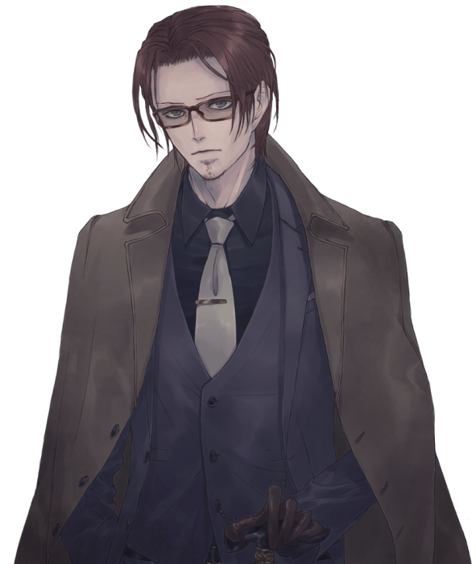
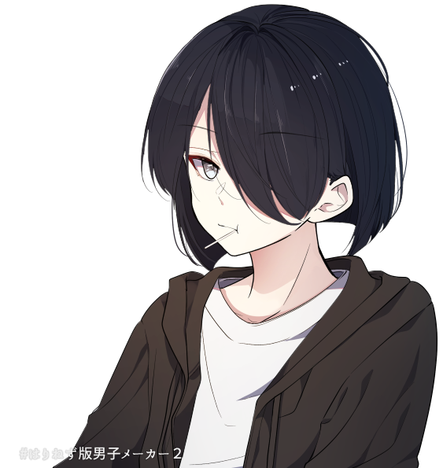
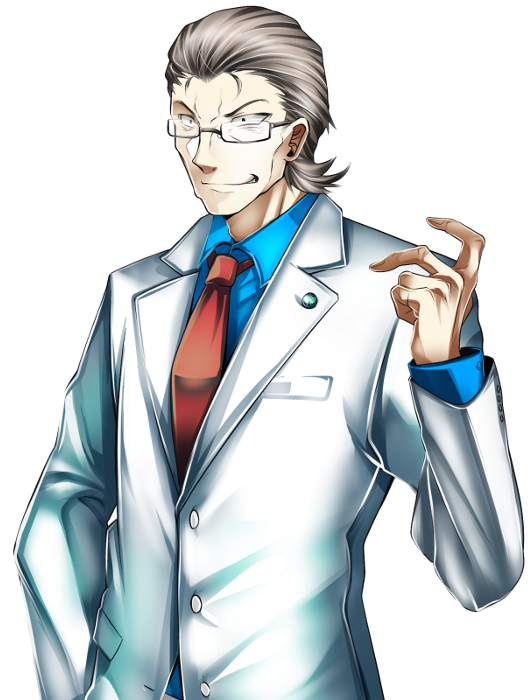
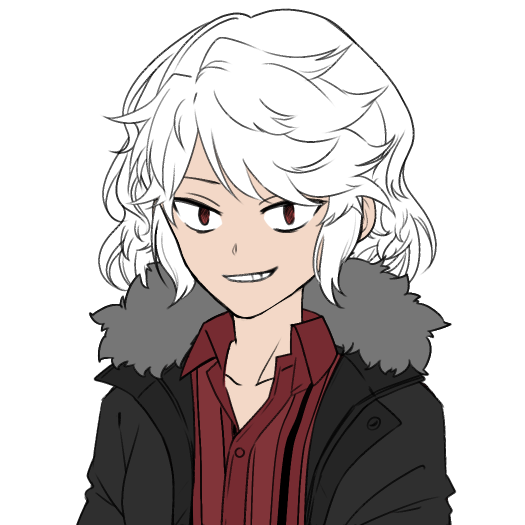

メインログ / 雑談ログ
キャラシート
PC1：遊佐ひまり (キャラシート) PL：めいPC2：ヴォルグ (キャラシート) PL：灸
PC3：天見礼司 (キャラシート) PL：カピバラ
PC4：小鳥居美夜凛 (キャラシート) PL：紫閃
目次
■プリプレイHO&PC紹介
■オープニングフェイズ
01 邂逅
02 不吉な前兆
03 全盛の再来？
04 運命流転
■ミドルフェイズ
05 合流
06 情報収集
07 情報共有
08 戦闘
プリプレイ
HO&PC紹介
GM : それではひまりちゃんから自己紹介お願いします！
遊佐ひまり : はい！

遊佐ひまり : “サイバー・ホーネット”遊佐ひまり。
遊佐ひまり : 料理と家事が得意で、ご飯食べることが大好きな16歳の高校生です！
遊佐ひまり : でもある日FHに拉致されて機械化手術されたせいで、食事が出来ない体になりました。
遊佐ひまり : 親も友人もFHに殺されて何もかもを失ってるけど、今の自分に出来ることをしようと思ってUGNのイリーガルになって、頑張って前向きに生きています。
遊佐ひまり : 能力的にはブラックドッグ/エンジェルハイロゥの射撃型。右腕をガトリング砲に変形させて敵を蜂の巣にします！
遊佐ひまり : 以上で！
GM : あざます！おのれFH許さん…！応援したくなる子だね…
遊佐ひまり : いっぱい応援してくれ…！
GM : するぜぇ～？そんなひまりちゃんのHOはこちら
■PC1：遊佐ひまり
ロイス：”ブラックバード”黒河コウ（くろかわ・こう）
黒河コウは最近覚醒したと思われるオーヴァードであり、未だにどこの組織にも所属していないと思われる。
あなたはUGNからの監視任務を受け、ターゲットである彼を尾行していた。
しかし彼を追いかけている内に、あなたは様々な不幸に見舞われ追跡は困難を要する。
やっとの思いで彼に追いついたあなたは、そこで”ディアボロス”春日恭二と密会する様子を目撃してしまう…
遊佐ひまり : これもう絶対敵では？（トレーラーの感じも見ながら）
GM : ま、まだわからんよ…💦（8割敵の紹介）
遊佐ひまり : ほんとに～！？じゃああとの二割にかけて信じよう…
GM : うむ…（？）それじゃ次はPC2のヴォルグくん！自己紹介をお願いします！
ヴォルグ : はーい

ヴォルグ : ヴォルグ、情報屋のレネゲイドビーイングです。
ヴォルグ : 気怠そうな表情に2m超えの身長、寒がりで適当な性格の低体温男性です。
ヴォルグ : 日本名・本名はありません、本人が適当に名乗っているロシア語での狼"ヴォルグ"を本名としています。
ヴォルグ :
好きな物は甘い物、手近に甘い物がなければ角砂糖もそのまま口に放り込んじゃうぐらい…
表情は薄めだけれど物腰や喋り方は柔らかいです！大人よりJKぐらいの年代・趣味のほうが話題が合う様子。
ヴォルグ : 自らの身体を凍傷でズタズタにする氷特化サラマンダーに加えてブラム=ストーカーのオーヴァード。名前とその戦闘姿から、コードネームは"フェンリル"。
ヴォルグ : 以上です！
GM : あざっす！体格のギャップから繰り出される可愛い内面よ…
GM : ヴォルグくんのHOはこちら！
■PC2：ヴォルグ
ロイス：”バーサークビースト”八重乃波留（やえの・はる）
八重乃波留はUGNに所属するオーヴァードである
友人、または同僚であるあなたは彼女と共にN市内で起きている不可解な事件を追っていた。
それはUGN関係者に限り、事故や病気などの厄災に見舞われるなどという現象だ。
あなたはその調査を行うという彼女と会う為に、指定されたファストフード店に訪れる事となる。
GM : ハルちゃんがロイスでっす、後ファストフード店じゃなくてチェーンレストランで合流します！
ヴォルグ : 了解です！
GM :
うっす！
それじゃ次！天見くん自己紹介をお願いします！
天見 礼司 : ういっす！
天見 礼司 : と言いたいんだけどちょっと用意していた自己紹介がちょっと趣旨とずれていたんだけどもいいかな？
GM : いいよ～、どんなのか見せてくれ！
天見 礼司 : ほいっさ！
地の文さん :
「さて、どうしたものか......」
とある部屋で男は悩んでいた。
地の文さん :
「（引き際を考えるならここがちょうどいいとは思うが）」
積み上げられた報酬と周りを囲む人々を横目で見ながら思案を続ける。
「（相手を一文無しに出来るチャンスを見過ごす......?いーや、出来ないね）
地の文さん :
「わかったわかった、勝負するよ。ただ、やるからにはそれなりの覚悟はできてるんだろうな？」
そう言って、テーブルの上に賭け金を置く。
対面の男は、その賭け金の多さに一瞬驚くも同等の価値の山をテーブルに乗せる
天見 礼司 : 「さてと、お楽しみの時間だ」
カピバラ :
男が満足げに額き、カードを表にすると同時に、観衆が動き出した。
一人が男にとびかかり、もう一人が男の名前を叫びながら拳銃を抜いた。
それと同時に男はテーブルを蹴り上げ、宙に舞わせた。
地の文さん :
煙が立ち、紙幣とカードが降り注ぐ。
しばらくして煙が晴れた時そこに男と存在していたはずの賭け金や取り分はなかった。
代わりに床に、五枚のカードが表を上に、ひらひらと舞い降りた。
地の文さん : 勝利の手札だった。
天見 礼司 : とまあこんな感じ！
天見 礼司 : 普段はUGNの事務員として働いたり働かなかったりしてます！
GM : 事務員さんだったのか！は、働かなかったりする！
天見 礼司 : 戦闘スタイルはカードにオーヴァードとしての力を乗せる感じのデバッファー！
天見 礼司 : 以上かな？
GM : ありがと！貴重なデバッファーだぜ！この卓でギャンブラーは中々面白い立ち位置どすな…
GM : それじゃ天見くんのHOはこちら！
■PC3：天見礼司
ロイス：”リヴァイアサン”霧谷雄吾（きりたに・ゆうご）
あなたは日本支部に所属するUGNに協力的なオーヴァードだ。
現在、N市内で起きているUGNをターゲットにしていると思われる厄災。霧谷はこれをFHの攻撃であると推察する。
このまま攻撃が続けば日本支部の機能が麻痺しかねない。霧谷は頼みの綱であるあなたを頼り、事態の解決を依頼する。
GM : 霧ちゃんさんの胃が今回も破壊されます
天見 礼司 : ﾀｲﾍﾝﾀﾞﾅｰ
GM : ﾀｲﾍﾝﾀﾞﾈ…
GM : それじゃ最後！美夜凛ちゃんお願いしますー！
小鳥居美夜凛 : はいー!
小鳥居美夜凛 :
“スリーピー・ホロウ” 小鳥居美夜凛
首無し騎士デュラハンをモチーフとしたレネゲイドビーイングの女の子です。レネゲイドビーイングとしての個体名はニュイといいます。
小鳥居美夜凛 :
デュラハンなので頭と身体がお別れしてたりしてなかったりします。
普段は縫い合わせてその上から装飾品などを付けて隠しているので見た目は普通の人間と変わりません。カヴァーとして喫茶店(に擬態した小さなUGN支部)でウェイトレスの仕事をしています。
小鳥居美夜凛 :
キュマイラ/オルクス/ソラリスのトライブリードでフォールンヴィークルを使った運転型です。
妖精の手でほんのちょっとだけサポートもできます。
小鳥居美夜凛 : そんな感じで以上！よろしくお願いします
小鳥居美夜凛 : https://charasheet.vampire-blood.net/4428513
GM : サンキュー！トライブリードでデュラハンの女の子…これはとてもレアですよ！
GM : そしてHOがこちら！
■PC4：小鳥居美夜凛
ロイス：”ディアボロス”春日恭二（かすが・きょうじ）
FHエージェントである春日恭二、なんと彼が力をつけて、UGNエージェントを連続で打倒しているという噂を耳にした。
この情報が真実である場合、彼は再びUGNにとっての脅威となりかねない。
そう判断したUGNは、腕利きであるあなたに威力偵察を依頼する。
そしてあなたは春日恭二の場所を突き止め、対峙する…事となるのだが、彼の隣には見知らぬ少年が立っていた。
GM : お、お前は…！ということで春日がロイスです！
メインプレイ
シーン1 邂逅
GM : 登場PCは遊佐ひまりちゃん！登場侵蝕どうぞ！
遊佐ひまり : はい！
遊佐ひまり : 1d10+37(1D10+37) ＞ 10[10]+37 ＞ 47
GM : オア！初手高燃費！
遊佐ひまり : 出たわね（ウェアウルフがあれなのでもう慣れた）
GM : およよ…それじゃ導入の文章を流していきます！
遊佐ひまり : おねがいします！
N市中央公園
GM : ある休日の日中。貴女はとある任務を受けて、公園を散歩する1人の少年を尾行していた。
GM : その名は黒河コウ、最近オーヴァードに覚醒したと思われる彼には黒い噂が立ち込めている
GM : その真偽を確かめるべく、貴女は彼の監視任務をUGNから依頼されたのだった。
遊佐ひまり : 「…………」
遊佐ひまり : ひまりは公園に植えられた木の陰に隠れ、顔を半分だけ覗きながら監視している。
遊佐ひまり : 「（あの人、ほんとにFHの関係者と会ったりしてるのかな……？噂ではそう聞いたけど……）」
遊佐ひまり : 「（オーヴァードに覚醒したばかりなら、早くUGNに連れて行って保護して貰った方が良いと思うんだけど……）」
遊佐ひまり : 「（もう声、かけてみようかな……噂は噂だし……。でもまずはしっかり監視してからにしろって言われてるし……）」
遊佐ひまり : 「う……うぅぅ……！どうすればいいの……！このままストーカーみたいなことし続けていいのかな……！」 思わず小声で唸ってしまう
黒河コウ :
「………」
そんな貴女を差し置いて、彼はどんどんと距離を離していく。
遊佐ひまり :
「あああ、もうあんなとこまで行っちゃってる！とりあえず追いかけなきゃ！」
木の陰や茂みに体を隠しながら、慌てて追跡していく
GM : 慌てずとも少し詰めればまだ見える距離。このまま尾行すれば彼の行き先もわかるだろう…
GM : ……しかし。なんとか追い付こうとする貴女には次々と困難が直面することとなる…
GM : 例えば、前方からランニングをしてくる男性と肩が触れ合ってしまうのだが…
ランニング中の男性 : 「あだぁ！？え、ご…ごめんなさい…？」
GM : 貴女の特殊な身体の関係上、男性が弾き飛ばされるように転んでしまう。
遊佐ひまり : 「いっ……！？」 痛いと言いかけるが、特に痛みは感じない
遊佐ひまり : 「え！？わ、わー！！ごめんなさい、大丈夫！？」 手を差し出して男性を起こそうとする
ランニング中の男性 :
「は、はぃ…大丈夫ですけど……？？」
何が起きたか理解できないまま、目をぱちくりさせて起き上がる
遊佐ひまり :
「だ、大丈夫ならそれでいいの！さよなら！」
変に何か訊かれる前に立ち去って、コウの尾行を再開しよう
GM : 男性もまた肩を抑えたままそのまま立ち去っていく。
GM : アクシデントはあったものの黒河コウの背中はまだ見えている、若干距離は離れたが追跡はまだ可能だ。
遊佐ひまり : 「よかった、まだそんなに離れてなかった……」 小走りで向かって行こうとして
GM : …だが、彼を追おうとした時。背後から声がかけられる。
同級生の女子 : 「ひまりっちウーッス！さっき見てたけど何あれー、ひまりの体幹エグくねー？」
同級生の女子 : 貴女の通う高校の同級生だ。先程の光景を見てつい声をかけたくなってしまったのだろう
遊佐ひまり : 「え！？」 振り返って
遊佐ひまり : 「びっくりした、なんでこんなとこに……っていてもおかしくないけど！」
遊佐ひまり : 「いや違うよ、あのえっと、ひまりの方がなんか当たり所がよかった？っていうか……」
同級生の女子 :
「マ？どんな当たり方だよ～(笑)」
「てかめっちゃ奇遇じゃん、せっかくだしこれから屋台巡りに行かない？春のお祭りみたいなのやってるらしいんだよね～」
遊佐ひまり : 「え、ほんとに！？行きたい行きた……」
遊佐ひまり : 一瞬瞳を輝かせるが、すぐにハッとして、
遊佐ひまり : 「って、ダメダメ！今用事があるからいけないよ！」
同級生の女子 :
「え、急用あったの！？邪魔しちゃってチョーごめんね…！」
手のひらを合わせて頭を下げる
遊佐ひまり : 「ううん、こっちこそごめんね！それじゃ……！」
遊佐ひまり : 同級生に背を向けて、コウの姿を探しましょう。
同級生の女子 :
「ういうい、そんじゃまたね！」
貴女の背中に手を振って、同級生は屋台の方へと駆けていく
GM : コウの背中は何とか見える程度だ。まだギリギリ見失うことはないだろう。
遊佐ひまり : 「あっぶな～……。見失っちゃうとこだった……」
遊佐ひまり : 「（でも、ひまりもお祭り行きたかったな……。いやいや、そんなこと思ってる場合じゃないから……っ）」 再び走り出そうとする
GM :
しかし、何かの意思が働いているのか…
その後もカラスの襲撃を受ける、砂塵が目に入る、外国人に道を尋ねられるetc…
GM : などの不幸が重なり、ちょくちょく黒河コウを見失いかけるも何とか彼のあとは追えている…
遊佐ひまり : ではカラスに突っつかれて制服が所々破けたり、砂塵が目に入って涙目になったり、英語出来ないのに頭使って頭痛してきたりしながら、
遊佐ひまり : 「…………」
遊佐ひまり : 「なんか……おかしくない……？こんな色々起こるなんて……」 肩で息をしながら追いかけてる
遊佐ひまり : 「今日、獅子座の運勢最下位だっけ……？？？」 コウの背中を見ながら、不思議そうに首を傾げる
GM : 次々に襲い掛かる不幸を振り払いながら、貴女は何とかコウが目指していた思われる場所にたどり着いた
GM : 彼がたどり着いたの公園内にある河見池の畔。どうやら彼は待ち合わせをしていたようで、待ち合わせ相手は彼を手招きして近くに呼び寄せる。
黒河コウ :
「…おじさん、休日ぐらい休ませて欲しいんだけど。」
棒付きキャンディを口に含ませながら、モゴモゴと不服そうに話しかける
遊佐ひまり : 「（……？誰かと会ってる？）」 少し離れた木の陰から目を凝らしてみる
??? : 「小僧、おじさんと呼ぶな。呼ぶのならコードネームで呼べと言っているだろう」
GM : 貴女はその相手に見覚えがある。UGNの資料、もしくは実際に出会ったことがあるかもしれない。
GM : そう…彼こそは”ディアボロス”春日恭二。FHのエージェントであり、幾度となくUGNの前に立ちふさがって来た不屈の男だ！
遊佐ひまり : 「……あっ！？」
遊佐ひまり : 大声を出しかけて、咄嗟に両手で口元を覆う。
遊佐ひまり : 「（あのおじさん……“ディアボロス”だ！）」
遊佐ひまり : 「（UGNの人が、割とどこにでも現れるから注意しとけって言ってた人！でもなんでこんなとこにいるの！？）」
遊佐ひまり : 「（っていうか、なんで会ってるの！？なんでー！？）」若干パニックになりながら、初めて見る春日恭二から目を離せないでいる
春日恭二 : 「それよりどうだ、能力の調子は？お前は計画の要なんだ、早くレネゲイドの扱いに慣れてもらわねば困るな」
黒河コウ : 「ちょっとは慣れて来たよ。でも常に発動させてる訳だしさ、結構疲れるんだよね…いつまで続ければいいの？」
春日恭二 : 「N市のUGN共を一掃できるまでだ。それが終わればいくらか休暇はやろう」
黒河コウ :
「でもそれが終わってもおじさんのバックアップがあるんでしょ？僕、この歳でおじさんの介護は嫌だなぁ…」
気だるそうに手すりに寄りかかる
春日恭二 :
「こ、小僧…っ」
彼の言葉に青筋を浮かべるが、なんとか気を落ち着かせる
春日恭二 : 「……それよりも小僧、お前はネズミを買う趣味があるのか？」
黒河コウ : 「…？ハムスターはまだしも、ネズミなんて…」
春日恭二 : 「そうではない、ネズミとは…」
春日恭二 :
「お前のことだッ！」
怪力で手すりを破壊すると同時に、その破片をひまりちゃんが潜んでいる位置へ目掛けて投げつける！
遊佐ひまり : 「えっ……！？」
遊佐ひまり : 突然飛来した破片に驚き、身体が一瞬固まるが──
遊佐ひまり : 「わあぁぁ！？！？」 脳内に埋め込まれた危険を察知するセンサーが働き、勝手に体が動いてその場から飛び出す
遊佐ひまり :
「あ、あぶ……危ないじゃない！いきなり何するの！？」
ズサーッと頭からスライディングして、顔を上げて春日を睨みつける
春日恭二 : 「フン、UGNのネズミか…早速この小僧に目をつけたようだが、一足遅かったな…」
黒河コウ : 「女の子…！？なんだかやたら後ろが騒がしいな、と思ったら…あの子もUＧNなのか……！」
遊佐ひまり : 「ネズミじゃないよ！遊佐ひまり！！」
遊佐ひまり : 「（あっ、そういえばこういう時ってコードネームの方が良いんだっけ……？）」 口元を押さえて
春日恭二 :
「ククク、軽々しく本名を口にするとは軽率なことだな。」
腕を異形のそれへと変形させ、戦闘に備える
春日恭二 : 「ここで潰しておきたい所だが…私達はお前程度になぞ構っていられないのだ…ッ！！」
春日恭二 :
その腕を地面に突き刺し、天地を返すように掘り返す。
その大量の土砂は目潰しを狙ったものの様で、貴女の視界を覆い隠す！
遊佐ひまり : 「うぇぇ！？」 咄嗟に服の袖で目を覆う
春日恭二 : 「小僧、ここは退くぞ！」
黒河コウ : 「な、なんだよもう！」
GM : 春日恭二と黒河コウは《瞬間退場》を使用！シーンから離脱します！
遊佐ひまり : 「……い、いない……。逃げちゃったの……？んべっ、口に砂入った……」
遊佐ひまり : 「どうしよう、完全に見失っちゃった……」 土煙が晴れた後、周囲を見渡す
遊佐ひまり : 「（とりあえず、UGNに報告した方が良いのかな……。でも……）」
遊佐ひまり : 「あの子、どうしてディアボロスなんかと……ファルスハーツと協力してるんだろ……？」
遊佐ひまり : うーん……と考えながら、とりあえず公園から立ち去りたいです。
GM : オッケー！とりあえずひまりちゃんはUGNにこんな事があったよーと報告することになりますね！
GM : このシーンはこれで以上なので、ひまりちゃんも大丈夫だったらシーンカットしちゃいます
遊佐ひまり : じゃあ、ロイスの感情だけ決定します！黒河コウのロイスの感情を、P好奇心/N不信感にします！表に出てるのは好奇心の方です。
遊佐ひまり : 以上で！
GM : おっけい！それじゃシーンカット！
シーン2 不吉な前兆
GM : 登場PCはヴォルグくん！登場侵蝕どうぞ！
ヴォルグ : 1d10+40(1D10+37) ＞ 4[4]+40 ＞ 44
GM : 振れてるね！ちゃんと足してる！えらい！
GM : 貴方は”バーサークビースト”八重乃波留に呼び出され、N市内のチェーンレストランへとやってきた。
GM : メールで送られた内容には「昼に〇〇レストラン、任務の話がある」…と、簡素な文面が送られてきたのみである。
GM : その内容に従い、貴方は件のレストランを訪れることとなった。
洋食レストラン・ドニィズ
ヴォルグ : 「…ここで合ってたか？」
ヴォルグ : 連絡用の携帯を眺めながら店内に入り辺りを見渡す。
ヴォルグ : 彼を出迎えたウェイトレスが背の高さに少し圧倒されつつ"お待ち合わせですね"と席まで案内する。
GM : 連絡通りの席まで案内されれば、そこには先に注文していたと思われるメニューがテーブルいっぱいに敷き詰められていた

八重乃波留 :
「むぐっ……よお、ヴォルグ。空いてる所にでも座ってくれ。」
貴方に軽く手招きをして
ヴォルグ :
「相変わらずよく食べることで…」
慣れているような表情でテーブルを眺めると席についてメニューを広げながら（まぁ、パフェのグラスぐらいなら収まるだろう…）と考えている
八重乃波留 :
「まだ食べるぞ。あとお前の分のパフェも頼んでおいた、きっと頼むだろうと思ってな」
手にしたフォークでメニューを指さして
GM : 噂をすればトレイにパフェを5～6個ほど乗せた店員が席に到着する。同時に空いた皿も回収してくれたのでこの大量のパフェも何とかテーブルに収まるだろう。
八重乃波留 : 「ほらな。いくつ食べるかわからなかったからこれぐらい頼んでおいた」
ヴォルグ :
「軽食だな。ああ、どうも…」
パフェの数を確認しつつ軽口を叩くと店員からパフェを受け取りながら少しテーブルの上の皿を寄せて隙間にグラスを置いてゆく、最初のパフェを食べようとスプーンを手に取るとハルに目をやり
ヴォルグ : 「…で、任務の話って？」
八重乃波留 :
「ああ、任務についてはな…」
口を開きかけるが一瞬、躊躇したように固まる
八重乃波留 : 「…誰に聞かれてるかわからん、アレで話すぞ。念話みたいなやつ」
ヴォルグ :
『…"シークレットトーク"な。』
パフェを一口食べながらそれを聞くと僅かに苦笑いをして早速エフェクトを使って呼び名を訂正する
八重乃波留 :
『それだ』
特に悪気もなく応える
ヴォルグ :
『まぁ伝わればいいさ。』
次も覚えていないだろうと思いながら平然とした様子で
八重乃波留 :
「（どこか含みを感じるな）」
『それじゃ、任務の話だ』
八重乃波留 : 『…N市でUGNの関係者を中心に事故やらに巻き込まれていることを知っているか？』
GM : このことはヴォルグくんも知ってて大丈夫でっす
ヴォルグ : はーい
ヴォルグ : 『ああ、話には聞いたな。どうも人為的には思えないらしいが…"不幸な事故"にしては被害者がUGNに集中しているんだろ？』
八重乃波留 : 『よくわかってるじゃないか。』
八重乃波留 :
『この事件の調査をお前にも手伝ってもらおうと思ってな…』
『幸いなことにお前は”まだ”不運な目には逢っていないようだからな』
ヴォルグ : 『ちょうど手が空いていたところだ。』
ヴォルグ :
『"まだ"ねぇ…そもそも俺がそういう感覚に鈍いのは知ってるだろ？』
不幸に気付いていないだけかもしれないぞ、と肩を竦める
八重乃波留 : 『それもそうだな。だが私は…』
GM : 彼女が言い終わらない内に、彼女の頭を目掛け「キラリ」と光る何かが降って来るのが見えた
ヴォルグ :
「！」
普段のゆったりとした所作からは想像がつかない早さでテーブルから身を乗り出すと、怯みもせずにその"何か"をハルの頭上で掴まえる
GM :
貴方は見事に”それ”をキャッチする。
正体を確かめようと手を開いてみると、それは食事用のナイフだった
GM : ナイフが飛んできたと思われる場所に目を向ければ、親子連れのテーブルが見える。そこには癇癪を起こした子供が食器類などを振り回し、親御さんが手をこまねいている様子が見られるだろう。
ヴォルグ :
「……」
少しだけ眉を顰めて原因のテーブルを眺めるが面倒くさそうに溜息をついてナイフを自分達のテーブルの上に置く
ヴォルグ :
「供え物でも食べたか？」
軽く冗談を言うが目の前で起きた不幸すぎる偶然に微かに動揺しているようだ
八重乃波留 :
『そこまで食い意地を張らん。食べるとしても供え終わった物を食べるぞ』
ムッとした表情を浮かべる
八重乃波留 : 『だが…今の通りだ、私にもある程度の不幸が纏わりついている。場合によってはこの調査に参加できないかもしれん』
ヴォルグ :
『…今みたいな"事故"が何度も起きていると？』
言葉の意味を理解すると少しだけ真剣な表情で聞き返す
八重乃波留 : 『ああ、前までは偶然で済ませられるレベルだったんだが…最近は外に出れば何かしらの不幸に遭遇するな。』
ヴォルグ :
難しい表情で暫く考え込み
『…それなら、寧ろ俺と調査した方がよくないか？俺は幸いまだそういった目に合っていないし一人で居るより事故も回避しやすい。』
ヴォルグ : 『お前も黙って不幸を待つ質じゃないだろ？』
八重乃波留 :
『当たり前だ。この程度で挫ける私ではない…が……』
『もしこれがFHの攻撃だとしたら、1人の不幸で多数の人間が巻き込まれる可能性がある。それに関しては避けなければならん』
八重乃波留 :
『実際に今回の出来事で1つの支部が麻痺しかけている…』
『霧谷は”まだ不幸の度合いが小さいエージェントでチームを結成する”…と言っていたが……』
ヴォルグ :
『それはまた…笑いごとじゃないな。』
『これで"度合いが小さい"？』信じられないと言いたげな様子でテーブル上のナイフに視線を向ける
八重乃波留 : 『小さいな。オーヴァードではないUGN職員が事故に巻き込まれ、入院を余儀なくされる…なんて事もあったらしい』
ヴォルグ : 『不幸ときいて軽く見ていたが…なかなか厄介そうだな。』
ヴォルグ :
『俺としてはUGNがどうなろうが知ったこっちゃないが…目の前で顔馴染みが危険な目にあっているなら断る理由もない。』
パフェの恩もあるしな、とスプーンで空になったグラス達を指してみせる
八重乃波留 :
『ふん、何だかんだ優しいヤツだな…』
すっかり食べ終わって空となった食器を見回して
ヴォルグ :
『待ち合わせ場所にはお前が案内してくれるんだろ？』
伝票を手に取り眺めながら席を立つ
八重乃波留 : 『ああ、そこまでは案内する。お前の他に後3人来るらしいから仲良くしろよ』
ヴォルグ : 『…俺が仲良くなれないのはお堅いどっかの支部長だけ。』
ヴォルグ :
会計に向かう途中で例の席を通りかかる、相変わらず子供は泣いて騒いでいるようだ。
無言無表情で口元に指をあて「しー」の動作をしてみせると子供は威圧感で目をまんまるにして見上げながらピタッと泣き止んだ
「…いい子だ。」
GM : 蛇に睨まれたように固まった子供を通り過ぎ、2人は会計を済ませ退店する。
八重乃波留 :
「…こっちだな。そういえば通りがかりにケーキ屋があるらしい、そこで何か買って行くか。」
進行方向を指さして
ヴォルグ :
「んー…」
シュークリームでも買って行くかと考えながら生返事をしている、どうやら知っている店のようだ
GM : ……しかし。貴方達がその方向に歩き始めると同時に、背後からけたたましい騒音が鳴り響く
通行人 : 「あんたらー！逃げろぉ―！」
GM : 呼びかけに振り向くと、その騒音の正体は操縦不能に陥った暴走中型トラックだった。
GM : 次々と歩道の街路樹や自転車をなぎ倒し、貴方達を目掛け猛スピードで突っ込んでくる！
八重乃波留 : 「───ッ！」
GM : 彼女は《ワーディング》を周囲に展開。非オーヴァードの意識を奪い彼らを無効化する。
八重乃波留 : 「ガアアアアアアアアアアッッッ！！！」
八重乃波留 : 更に《獣の力》を使用。獣の如き咆哮を轟かせ、暴走トラックを真正面から構えた。
八重乃波留 : 彼女は腕を大きく振りかぶると、目と鼻の先にまで迫ったトラックへ向かって勢いよく拳を放つ。
八重乃波留 :
辺り一帯に響き渡る凄まじい破壊音。
暴走トラックは見事に大破し、運転手を含め犠牲者を出すことなく鎮圧された。
八重乃波留 :
「フゥゥゥゥ……」
自分の獣性を収めるように深く息を吐きだし、貴方に振り返る
ヴォルグ :
『…お前じゃなきゃ死んでたな』
咄嗟に《氷雪の守護》を使おうとしたらしい、非オーヴァードにバレないうちにそっと冷気を鎮めながら長い溜息をつく
八重乃波留 :
『…少し危なかったがな』
トラックを受け止めた拳から血が滴っている
八重乃波留 : 『……ヴォルグ、待ち合わせ場所にはお前1人で行け。今の私では同行は難しいだろう。』
ヴォルグ : 『その方がよさそうだな…場所は？』
八重乃波留 : スマホを取り出し、軽く画面を弄ると貴方の端末にメッセージの着信が入る。
八重乃波留 : 『画像を送付した、そこに行けばわかる』
GM : その場所は有事の際に使われるUGNの息がかかった貸しテナントだ
ヴォルグ :
スマートフォンを眺め、場所を確認するとそれをポケットにしまう
『ん、どうも。』
ヴォルグ : 『お前はどうする？』
八重乃波留 : 『私はここに残る。UGNに処理を頼まなければならないからな…』
八重乃波留 : 『その後は…この不幸を躱しながら私なりに情報を集めてみるとするか』
ヴォルグ :
『そうか。まぁお前ならある程度の不幸でも大丈夫だろ。』
そう言いながらも視線は血の滴る拳を気にしているようだ
八重乃波留 :
「まあな…」「ああ、この程度は気にするな。すぐ治る。」
滴る血をハンカチで拭いとる
ヴォルグ : 「知ってはいるが良い気はしないな。」
ヴォルグ : 「（とはいえいつまでも見守る訳にもいかないか…）」
八重乃波留 :
「過保護なやつだ…」「ほら行け、その内お前まで巻き込まれるぞ」
やれやれと首を振る
ヴォルグ :
「根本を解決する方が早いか…」
困ったように肩を竦めると待ち合わせ場所へと踵を返す
ヴォルグ : ふと思い出したようにポケットのものを取り出すとハルに向かって投げる
八重乃波留 :
「むっ」
投げられたものをキャッチ
ヴォルグ :
投げられたそれはソーダ味の飴玉のようだ
「お守り、解決するまで食うなよ？」
ヴォルグ : ちょっと心配そうに笑って待ち合わせに向かいます。
八重乃波留 :
「…ああ。」
飴玉をポケットに仕舞い込んで、貴方を見送る
GM : シーンカットで大丈夫かな！ロイス処理のみ可能！
ヴォルグ : 八重乃波留のロイスの感情を、P庇護/N不安にします！表に出てるのは庇護です！
ヴォルグ : 以上で？いいのかな…！
GM : おっけーい！庇護られた！
ヴォルグ : 守るために離れる！
GM : 大丈夫ですよー！長めのRPお疲れ様だぜ…！
シーン3 全盛の再来？
GM : 登場PCは美夜凛ちゃん！登場侵蝕どうぞ！
小鳥居美夜凛 : 1d10+45(1D10+45) ＞ 5[5]+45 ＞ 50
GM : キリが良い！導入流していくぜ！
GM : ”ディアボロス”春日恭二。彼はかつてFHの幹部候補とまで言われた男である。
GM : それと同時に、とある出来事で躓いて以降は何かに憑かれたように何もかも上手くいかなくなってしまった男でもあった。
GM : だが、なんと彼がかつての栄華と力を取り戻しつつあると言う噂を耳にする
GM : 直近の彼に襲撃されたUGNエージェントは悉く敗走まで追い込まれ、彼らの受け持つ任務の続行が困難となる程だ。
GM : この事態を重く見たUGNは腕利きのオーヴァードである貴方、”スリーピー・ホロウ”小鳥居美夜凛へ威力偵察を依頼する
繁華街 路地裏
GM : そして貴女は今。その春日恭二の後を着け、路地裏までやってきたのであった。
春日恭二 : 「…お前達はそこで待機しろ。期を伺い、私の合図でUGNを…」
GM : 誰かと通信しているようで、周囲を警戒している様子はない。
小鳥居美夜凛 :
「(あれが噂の“ディアボロス”ですね…ふーん)」
建物の影から様子を伺いながら
小鳥居美夜凛 :
「(支部のみんなからそれはもう散々な言われようでしたし、今も全然こちらに気が付いてないみたいですけど……本当に強いんですかねぇ、あのおじさん…)」
そーっと1歩後退してから首を小さく傾げる
小鳥居美夜凛 : 「……でも、UGNの人が何人も返り討ちにあってるって言いますし ほっておくわけにも行きませんよね」「………それに」
小鳥居美夜凛 : 1人納得したように頷いてから
小鳥居美夜凛 : 「強いかどうかは……戦ってみればわかりますよね！」
小鳥居美夜凛 : 彼女はパチンと指を鳴らす。
小鳥居美夜凛 : すると、霧とともに何も存在しなかった空間に一頭の黒い馬が現れる。いや、たしかにそこ存在していたが彼女の能力で存在を隠蔽されていたのだ。
小鳥居美夜凛 :
「行きますよ、シャルマン！」
彼女は身軽にも、その大きな馬にひらりと跨ると脚で横腹を叩く。
小鳥居美夜凛 : シャルマンと呼ばれた彼女の愛馬は、嵐のような鋭い嘶きを一声発してそのまま一直線に“ディアボロス”に向かい突き進む。
春日恭二 :
「────ッ！！ぬおおおおおおっ！？」
春日は《イージスの盾》を使用。シャルマンの突撃を間一髪で防ぐが衝撃で地面に転げる
小鳥居美夜凛 :
「……！」
「(今の感じ、防がれましたかね…？)」
春日恭二 :
「ぐっ…！お前は…UGNか……！」
体勢を立てなおし、貴女を見据える
春日恭二 :
「ククク…だがツイていないな、UGNの女。今の私は今までと一味違うぞッ！」
腕を異形に変化させ、あなたに飛びかかる！
小鳥居美夜凛 :
「あらら、やっぱり思ったより無事そう…？」
後ろをチラリと確認して
GM : この攻撃は演出で処理できます！あと聞いていたより何か弱く感じます
小鳥居美夜凛 : 了解です！では、
小鳥居美夜凛 :
「こんにちは、どうもはじめまして」
そこまで広くもない裏路地であるにも関わらず、彼女は手網を力強く引きつけ方向転換を行う。
小鳥居美夜凛 : 「わたしは“スリーピー・ホロウ”というものです」まるで悪気のなさそうな屈託のない笑みを浮かべて
小鳥居美夜凛 : 「“ディアボロス”さん、最近のあなたの行動が目に余るということでっ……」
小鳥居美夜凛 : 強く手網を打ち付ける音が裏路地に木霊する。
小鳥居美夜凛 : 「UGNの方から協力要請を受けて、あなたのことを偵察に来ましたっ、覚悟してくださいね！」
小鳥居美夜凛 : そう言い放つと、飛びかかってきた“ディアボロス”に向かい間髪入れずに襲撃をかける。
春日恭二 : 「”スリーピー・ホロウ”…！？首無し騎士という訳かッ！」
春日恭二 :
「ぐああっ！？な、なるほど…ッ、やはり”アイツ”が傍にいなければ…という事か…！」
見事にカウンターを食らった春日は再びに地面に転げ、何かに納得したように呟く
小鳥居美夜凛 :
「ん～……よくご存知ですね、大正解です」
初撃は防がれたが想像していたよりもこちらが優勢なことにやや拍子抜けな様子で
小鳥居美夜凛 : 「(……でも、今なにか。“アイツ”が傍にいなければ？)」
小鳥居美夜凛 : 一瞬春日の発言が引っかかるが、思いのほか部がありそうな手応えに このままいけば押し切れるかもしれない という気持ちが先走る。
小鳥居美夜凛 : 「まあ、このままだと“首無し騎士”として戦うまでもなく終わっちゃうかもしれませんが……！」手網を引いて体勢を立て直し、再び攻撃をしかける機会を伺う。
春日恭二 :
「くっ…！癪だが背に腹は変えられん…っ」
携帯にメッセージを打ち込み、誰かへ送信する
GM : …数秒後、彼の背後に《ディンメンジョンゲート》が開かれる。彼が呼んだと思われる増援が到着したようだ。
小鳥居美夜凛 :
「ちょっと、余所見ですか………っ！？」
突然のことに攻撃に出ようと動かしかけた手が止まる
GM : ゲートから現れた増援はたった一人の少年だった。貴女と春日を交互に見比べると気だるそうに軽くため息をつく。
春日恭二 : 「ククク、よく来てくれたな。”ブラックバード”…」
黒河コウ : 「……またおじさんのバックアップ？あれ、めっちゃ疲れるんだけど……」
小鳥居美夜凛 :
「……え？何ですか、その子」
思わずキョトンとした顔になる
春日恭二 :
「”ディアボロス”と呼べと言っている…！」
「私の右腕候補…と言ったところだ。ククク…覚悟することｄ……どうした。」
再び構えようとするが、”ブラックバード”と呼ばれた少年に袖を引っ張られ動きを遮られる
黒河コウ :
「あの女の子、なんで馬…？に乗ってるの？後ああいう子もUGN、ってやつ？」
美夜凛ちゃんを指さして、疑問をぶつけている
春日恭二 :
「……そうだ、奴もUGNだ。そういう話は後にしてくれないか？」
不機嫌そうに額に皺を寄せる
小鳥居美夜凛 :
「え？いつもそんな幼気な少年にバックアップしてもらってるんですか、“ディアボロス”さん…？」
こちらもこちらで疑問をぶつける
春日恭二 : 「……ククク、こいつを侮らないことだな。戦闘能力はそこまでだが、こいつの真価は……」
春日恭二 :
「身をもって知るが良いッ！」
再び飛び掛かり、異形の腕を振るう！
小鳥居美夜凛 :
ハッとした顔になって手網を握り直す。
そのまま迎え撃ちます！
GM :
では。その攻撃を迎え撃とうとした貴女でしたが…
それは”不幸にも”春日をすり抜け、彼の爪がシャルマンと貴女を切り裂く！
春日恭二 : 「ククク…！運がこちらに流れ始めたようだな…！」
小鳥居美夜凛 :
「えっ……！？」
切り裂かれた衝撃で糸がプツンと切れ、美夜凛の頭部がごろりとその身体から転がり落ちようとする。
小鳥居美夜凛 : 咄嗟に伸ばした手でなんとか自分の頭を抱えこむが、この狭い路地で横をすり抜けてしまったという奇妙な“不運”に戸惑いを覚える。
小鳥居美夜凛 : それでも動揺を隠すように小さく息をつくと
小鳥居美夜凛 : 「っと、危ない危ない……頭が地面を転がるって結構痛いんですよ、もう」傷ついたシャルマンを宥めながら軽口を叩く。
黒河コウ :
「うわっ…！頭が取れた……しゃ、喋ってる……っ！」
一連の光景を見て若干怖気ているようだ
春日恭二 : 「気を散らすな小僧。ヤツはああいったオーヴァードだ」
春日恭二 :
「軽口を叩いている余裕も…今に無くなるっ！」
コンクリートの壁に腕を突き刺すと、薙ぎ払うように引き抜きコンクリートの散弾を生み出す！
GM : いくつか春日と打ち合ったら撤退の流れになります…！
小鳥居美夜凛 : 了解です…！最終的にこっちが撤退する形かな？
GM : ですです！
小鳥居美夜凛 : はーい！
小鳥居美夜凛 : 「っ……！」では、そのままシャルマンを前進させて建物の影に退避します。
小鳥居美夜凛 : 美夜凛が姿を隠したあと、辺りに急に霧が立ち込めはじめる。
小鳥居美夜凛 : 次の瞬間、馬の嘶きが響き渡る。しかし、それは前方からではなく後方から…！
小鳥居美夜凛 : 「軽口を叩いてる余裕はなくなる？それは、どうですかね…！」美夜凛はオルクスの能力を利用して後方から現れて強襲を仕掛けます。
春日恭二 :
「ぬぅっ、小癪な真似を…！」
《イージスの盾》で致命傷を避けつつ、何とかその強襲を受け流す
春日恭二 :
「ククク…！今までのエージェントとは一味違うようだが、今の私に敵うはずがない！」
春日は勢いよく腕を振るうと霧の一部が払われ、安全地帯が作られる
小鳥居美夜凛 : 「……！」
小鳥居美夜凛 : 先程までと違う、こちらが押されかけている……それに加えてあの奇妙な“不運”。
小鳥居美夜凛 : 「(それもこれも、さっきの少年“ブラックバード”が現れてから……)」
小鳥居美夜凛 : 「………シャルマン！」愛馬に合図を送りそのまま“ディアボロス”の横をすり抜けると、濃い霧の中へと姿を暗ます。
小鳥居美夜凛 : 霧の中を馬の蹄の音が遠く遠くへと遠ざかりそのまま消えていく。
小鳥居美夜凛 : 美夜凛は“ディアボロス”の脅威の裏には何かある、一度調べ直す必要があると判断してその場から撤退します。
GM : 了解！
春日恭二 :
「……撤退したか…。賢明な判断だな。」
後を追う事はせず、その場に留まる
春日恭二 :
「しかし、助かったぞ”ブラックバード”。今後ともその力を役立ててもらおう」
眼鏡を調整しつつ、後ろを振り向く
黒河コウ :
「ぐっ…あ、ああ……あまり頻繁に呼ばないで欲しいけどね……」
一瞬、苦しそうに頭を抑える
春日恭二 :
「…レネゲイドの扱いに慣れれば、能力の使用で疲れる様なことはない。これからも精進することだ。」
彼の体調を気にかけつつ、路地裏を後にしてこのシーンから退場します
黒河コウ : 「…だと良いんだけどね。」
GM : シーンカット！ロイスの処理だけできまっす！
小鳥居美夜凛 : それじゃあ春日恭二のロイスは感服/脅威Nで！
GM : 了解！久しぶりに脅威に感じボロス！
シーン4 運命流転
GM : 登場PCは天見くん！登場侵蝕どうぞ！
天見 礼司 : 30+1d10(30+1D10) ＞ 30+3[3] ＞ 33
GM : 低燃費っぴ！それじゃ導入！
パチンコ・ボールレス
GM : 店内に充満するタバコの香り。耳をつんざく爆音のオーケストラ。目が焼かれるのではないかと錯覚するビカビカとした光…
GM : そう、ここはアミューズメントパークに隣接されたパチンコ店。そこで貴方はいつものように博打に耽っていた。
GM : しかし今日は調子が悪い。用意した軍資金も飲み込まれ、底を尽きかけている。
天見 礼司 : 「...んー、ちょっとこれはまずいな」少なくなった財布の中身をを確認する
天見 礼司 : 「狙いは悪くはなかったが...まあこれもギャンブルか」財布をスマホに取り換え球を打ちつつスマホを触り始める
GM : そんな貴方は台への熱意が冷めてくると同時に、背後に気配を感じる。
??? : 「──天─さん、天見さ───！」
天見 礼司 : 「台を変えるかそれとも帰るか...ん？」 悩んでいる途中で気配に気づき振り返る
霧谷雄吾 : 「…どうも、天見さん。この音の中ではやはり聞こえづらいですか」
GM : そこにはUGN日本支部の大黒柱である”リヴァイアサン”霧谷雄吾、その人が立っていた

天見 礼司 :
「これはこれは日本支部長ってお方がこんなところまでやってくるとはご足労で」 ﾎﾞﾀﾝｦｵﾁｪｰ! (ｽﾝ...) ﾝﾁｪﾁｪ...ｽﾏﾝﾁｪ...
わざとらしい態度で出迎える
天見 礼司 : 「何かご用件でも？それとも意外とこういうのが好きだったり？」
霧谷雄吾 : 「いえ、今回は打ちに来た訳ではありません。貴方にとある任務について頂きたく…」
霧谷雄吾 :
「…隣、よろしいですか？」
台を打つ訳ではないが、通路に立っているのは邪魔だろう…と思っているようだ
天見 礼司 : 「ご自由にどーぞ、なんなら初期費用のサービスもありますぜ」 そういって財布から万札を取り出す
霧谷雄吾 :
「い、いえ！せっかくですが遠慮させて頂きます。」
「きっと今日の私もツイていないでしょうから」
霧谷雄吾 : 「…ところで天見さん、貴方は”UGN関係者が不運に見舞われている”という話を聞いた事がありますか？」
天見 礼司 : これは知ってていいのかな
GM : 知ってていいよ！
天見 礼司 : 「あーはいはいはい、最近誰もかれもツイてないって雰囲気出してたから知ってる。ここに来たものそれと関係ある話ってことか」
霧谷雄吾 : 「その通りです。UGNにのみ降りかかる不運…まさに”厄災”と言うべきか…」
霧谷雄吾 :
「…実際、UGN日本支部にもその影響が出始めています。今は軽度の不運が連続している程度ですが……いつこれが重度の物になるか……」
険しい顔で正面の台を見つめる
霧谷雄吾 : 「…私はこの厄災をFHによる物と見ています。一刻も早くこの状況を作り出したオーヴァードを特定し、対処しなければ…」
霧谷雄吾 : 「それには天見さん。私は貴方の力こそが必要と考えているのです。」
天見 礼司 : 「そうか？こっちはただの事務員、そんな大事ならもっといい奴がいると思うんだが」 厄介事を持ち込まれそうめんどくさそうな顔をしている
霧谷雄吾 : 「……”Distorted Fate”天見礼司。私は今の状況でこそ、貴方が適任だと思うのです。」
霧谷雄吾 :
「私は貴方の運に、賭けてみたい」
ただただ真剣な表情で、貴方を見つめる
天見 礼司 : 「...あーらら、流石にバレちゃってますか」
天見 礼司 : 「分かった、その任務引き受けた」
天見 礼司 : 「ただ...」
天見 礼司 :
「俺のツキに賭けているようだけどこの任務についてはギャンブラーじゃなくて、オーヴァードとして動く」
ﾜﾀｼｦｲﾏﾏﾃﾞｼﾝｼﾞﾃｲﾃｸﾚﾀｱﾅﾀﾆﾊ､ｾﾞｯﾀｲﾆﾏｹﾅｲｶﾗ！
「それでいいか？」
霧谷雄吾 : 「…ええ、了承しました。吉報が齎されることを信じていますよ。」
天見 礼司 :
「了解。あと一つ....不幸だ、運に見放されてると言っているが...」
天見 礼司 : 「ツキなんて自分で引き寄せるもんさ、ポケットに隠された切り札(エース)のように..な」･･････ｳﾝ｡ﾜﾀｼﾉ･･････ｲﾔ ﾜﾀｼﾀﾁﾉｶﾁﾀﾞﾖ
天見 礼司 : そう言って図柄のそろった液晶を見せる
霧谷雄吾 : 「…その様ですね。では、貴方の切り札がどう働くのか…期待させてもらいましょう。」
霧谷雄吾 :
「それでは、臨時で設立した作戦室について…」
「それと後3人のオーヴァードがこの作戦に参加します。彼らと共に行動していただけると…」
この辺はカクカクシカジカで説明します
天見 礼司 :
「ふむふむなるほど、大体わかった。ま、いい知らせを待ってな」
「それはそうともうちょっとだけ打っていい？」
天見 礼司 : とまあこっちからはこんな感じかな
霧谷雄吾 :
「え、ええ。構いませんよ。」
「では、私はこれで失礼します。私からも何かあれば連絡を差し上げますので…」
GM : そう言って霧谷はパチンコを後にします
GM : シーンカット！ロイスの処理のみ可能です！
天見 礼司 : 霧谷くんに誠意/厭気をPでとりまーす
GM : 了解！
シーン5 合流
GM : このシーンでは全員登場です！登場侵蝕どうぞー！
遊佐ひまり : 1d10+47(1D10+47) ＞ 7[7]+47 ＞ 54
ヴォルグ : 1d10+44(1D10+44) ＞ 9[9]+44 ＞ 53
天見 礼司 : 1d10+33(1D10+33) ＞ 3[3]+33 ＞ 36
小鳥居美夜凛 : 1d10+50(1D10+50) ＞ 6[6]+50 ＞ 56
GM : 高燃費だ！それじゃ導入を流します
仮設作戦室
GM :
UGNが貸しテナントに設置した作戦室。
ここはN川に近く、道路からもそこそこ離れている。
GM : 恐らくは大きな”不運”から出来るだけ避ける為に選ばれたのだろう。
GM : そして貴方達は道中で多少の不幸に見舞われつつも、無事作戦室に到着したのであった。
遊佐ひまり : 「うぅ……また酷いめにあった……」
遊佐ひまり : そう言いながら、ひまりは一人、作戦室に置かれたテーブルの上に顔を突っ伏している。
遊佐ひまり : 「まだこういうこと続くのかな～……！もう勘弁してよぉ……」
遊佐ひまり : 人とぶつかったり転んだり野良犬の襲撃にあったりして、ボロボロになった服を直す余裕もなくぐったりしている。
小鳥居美夜凛 : では、入口の方から
小鳥居美夜凛 : 「こ、こんにちは～ どなたかいらっしゃいますか？」とよたよたとした足取りで入ってくる。
小鳥居美夜凛 : この時期には少し季節外れな厚手のスカーフを首にぐるぐると巻いていて、長い髪はボタボタと水が滴っている。
遊佐ひまり : 「！ います！」 声が聴こえ、バッと顔を上げる
遊佐ひまり : 「って、うわ！凄い濡れてるよ！？どうして！？」
小鳥居美夜凛 : 「あ、こんにちは！はじめまして～」にこっと笑って
小鳥居美夜凛 : 「あ、あー……すみません！えへへ…実はここに来る途中で色々あって頭を川に落としてしまいまして～……」死ぬかと思いました…と髪の水を絞る
遊佐ひまり : 「頭を……川に……？？？」
遊佐ひまり :
「なんかよく分かんないけど、そのままじゃ風邪引いちゃうよ！これ使って！」
部屋の物置からタオルを取って渡す。同じ不運仲間がいて謎の心強さを得たのか、もうさっきみたいにしょぼくれてはいない。
小鳥居美夜凛 : 「わわ、お気遣いどうもありがとうございます！髪が長いせいで本当全然乾かなくて～…」親切にしてもらいパッと表情が明るくなる。タオルでぎゅっと髪の毛を挟んで水分を取っていく。
遊佐ひまり : 「全然良いの良いの！なんかもうお互い大変だよね～……」
天見 礼司 : 「ここが霧谷が言ってた場所か...どーも」 缶コーヒーを片手に入り口から入ってくる
天見 礼司 : 「...どうやら情報通りどいつもこいつもツイてなさそうだな」 ボロボロの二人を見て
遊佐ひまり : 「あ、今度は大人の人だ！こんにちは！」 ボロボロだけど人が増えてきたので笑顔になる
小鳥居美夜凛 :
「あ、ほんとですね！」
「こんにちは～ すみません、その辺床濡れてるので滑らないように気をつけてくださいね」
わしゃわしゃとタオルで拭いていた頭をあげて
天見 礼司 : 「はいはいこんにちはと、ところで自分以外にあと3人って聞いてたんだが嬢ちゃんたちはあと一人が誰か知ってるかい？」
遊佐ひまり : 「え、そうなんだ？ひまりは知らないかも」
小鳥居美夜凛 : 「はい、全部で4人と伺っていますが～…ええと、どのような方が来るかは私も聞いていませんね」首をかしげて
ヴォルグ :
「あー…それは俺のことだな。」
ハルに送ってもらった情報が携帯から消えてしまったのか入り口前で少し様子を伺っていたが、会話をきいて確信をもったように入っていく
遊佐ひまり : 「あっ、噂をすれば来て……おっき！？」 ヴォルグの身長に驚いて思わず声に出る
小鳥居美夜凛 : 「もう1人も男性の方でしたか！わぁ、ほんとに身長お高いですね…」シャルマンの頭の高さくらいまであるのでは…と考えながら
ヴォルグ :
「よく言われる、首が痛いなら屈もうか？」
ドアを半ばくぐるように入室し、見下ろしながら慣れたように肩を竦めて驚く２人に冗談を言う
遊佐ひまり : 「じゃあ……あっ、屈まなくても椅子に座れば良いじゃない！ほらみんな座って座って」 テーブルの周りにある椅子に座る
ヴォルグ :
「じゃあお言葉に甘えて。」
テーブルに足が当たらないよう椅子を引くとそこに座って話を聞く態勢に
天見 礼司 : 「よし、これで4人全員揃ったな。聞いたところによると集められた人はまだ不幸の程度がマシとは聞いていたが...本当か？」周りの様子を見て考える
遊佐ひまり : 「えー、そうなの？全然マシじゃないよぉ。カラスには突っつかれるし野良犬には追いかけられるし……」
ヴォルグ :
「俺はまだそういった目には合っていないな…」
気付いていない様子で思い当たる節がないか考えながら答える
小鳥居美夜凛 : 「マシ……マシなんでしょうか？」先程溺れかけたことを思い返し頭にハテナが浮かぶが、きっとそうなのだろうと
小鳥居美夜凛 : 「座ったら突然椅子がバラバラに…！なんてことはないですよね～ ……いえ、こういうこと言うと実際に起こりそうなのでやめましょう」ふぅ…とため息をついて椅子に腰掛ける
遊佐ひまり : 「うわやだな～、なんかそういうのも起こりそうで……とりあえず大丈夫そうだけど」 椅子の足を確認して
天見 礼司 : 「どうやら若い子は心当たりがあるみたいで...どうやら事態は思ったより深刻そうだ」 ヴォルグが座ったのを見て自分も椅子に腰かける
ヴォルグ :
「…そうだな、俺も軽く見ていたがなかなか深刻みたいだ。」
その言葉には思い当たる節があった様子で答える
遊佐ひまり : 「でも、四人もいればなんとかなるよ！あ、そういえばひまり達まだお互いに名前も知らなくない？」
小鳥居美夜凛 : 「そちらは……あ、そうでしたね！自己紹介がまだでした」礼司さんに尋ねようとしたところでハッと手を打って
遊佐ひまり : 「だよねだよね？」
遊佐ひまり : 「そういうわたしは遊佐ひまりっていうの。高校生で、UGNイリーガルだよ！よろしくね！」 両手で口元を隠しながら、笑顔で自己紹介する
遊佐ひまり : 「あっ、あとコードネーム忘れてた！サイバー・ホーネット！」
小鳥居美夜凛 : 「“サイバー・ホーネット”遊佐ひまりさんですね、よろしくお願いします！」
小鳥居美夜凛 : ｢ええと、わたしは“スリーピー・ホロウ”小鳥居美夜凛と申します。レネゲイドビーイングで、個体名はニュイと言います」
小鳥居美夜凛 : 好きなように呼んでくださいね～、と微笑みぺこりとお辞儀をする。……と、頭がポロリと膝に落ちる。
遊佐ひまり : 「同い年位の女の子だ～って思ってたけど、レネゲイドビーイングなんだ！じゃあ美夜凛ちゃんかニュイちゃんってどっちで呼べば……っっっ！？！？！？」 頭を落とした瞬間声を失う
天見 礼司 : 「...!?」 予想外の出来事に驚く
ヴォルグ :
黙って自己紹介を聞いていたが膝に落ちた頭を見ると少し驚いた様子で
「…それも不幸のせい？」
小鳥居美夜凛 : 「わわっ、すみません！！川に落としたあとしっかりと縫う暇がなくて……不幸のせいかと言えば半分そうなのかも……？」あわあわしながら
小鳥居美夜凛 : 「わたしの起源はデュラハンなんです。いつもは縫い糸でしっかり首を繋いでるんですけど不運のせいかここに来る途中で切れてしまって……」言葉を失う3人にえへへ…と照れくさそうに笑って
遊佐ひまり : 「え、ええ～……？デュラハンってよく分かんないけど……い、痛くないの……？」 心配そうに見つめる
小鳥居美夜凛 : 「はい、全然！むしろ身体と頭がくっついている方が窮屈というか……」膝に乗った自分の頭を撫でながら
遊佐ひまり : 「そうなの？じゃあ……いっか？」 まだちょっと驚きながらも
天見 礼司 : 「本人じゃないから便利なんだが不便なんだかよくわからないな...」 取り外された頭部を眺める
ヴォルグ :
「楽ならそのまま話してもいいぞ。」
また落としても困るだろ、と頭を撫でている様子を眺めながら
小鳥居美夜凛 : 「そうなんですよ～、オーヴァードだから傷は治るんですけど落とすと結構痛くって……」では、お言葉に甘えちゃいますねと言いながら
小鳥居美夜凛 : 「UGNでお世話になっていて、普段支部の子には……んーと、美夜凛ちゃんと呼ばれてることの方が多いですかね。よろしくお願いします」先程のひまりちゃんの問いに答えつつ挨拶する
遊佐ひまり :
「じゃあ、ひまりも美夜凛ちゃんって呼ぶ！よろしくね！」
頭部が外れることには少しだけ慣れて来たのか、笑顔が戻る
小鳥居美夜凛 : 「はい！よろしくお願いします、ひまりさん」にこっと笑顔で返して
ヴォルグ :
「“サイバー・ホーネット”、“スリーピー・ホロウ”だな。」
コードネームを呼びながらふたりに視線を向けて
ヴォルグ : 「俺のコードネームは“フェンリル”、名前はヴォルグだ。右に同じくレネゲイドビーイングでUGNの情報屋をしている、本名はないから好きなように呼んでくれ。」
ヴォルグ : 本当はイリーガル志望なんだがな、とぼやきながら軽い口調で
遊佐ひまり : 「レネゲイドビーイングなんだ！あれ？じゃあ……ヴォルグくんも取れるの？頭」 自分の顔を両手で挟みながら首を傾げる
小鳥居美夜凛 : 「あら、お仲間でしたか…！では、ヴォルグさんと……え？取れませんよね、頭？」きょとんとした表情でヴォルグとひまりを交互に見比べる
ヴォルグ :
純粋な視線に少し笑って
「悪いが俺の起源は『雪女』だから期待には応えられないな。強いて言えば体温が人間より低いぐらいか？」
遊佐ひまり :
「あっ、そっか起源が違うんだ！雪女か～……雪女？」
男だけどそういうのもあるんだ、と不思議そうに見てる
天見 礼司 : 「雪女にデュラハン...なかなかに個性的な人たちじゃないか、いやレネゲイドビーイングか」 興味深そうに二人を見比べる
ヴォルグ :
「物語の変異だろうな、俺自身は彼女と面識も何もないよ。」
そういうレネゲイドビーイングもいる、と自分なりの解釈を説明しながら頷く
遊佐ひまり : 「なるほど～……。レネゲイドビーイングって人間のオーヴァードより色々あるから、会うたびにびっくりしちゃうなあ。ほんとに個性的かも」
小鳥居美夜凛 : 「デュラハンの伝承も色々あるみたいですけど、基本的には男性として語られているのでそういった意味でもお仲間かもしれませんね～」頷けないがふむふむと納得したように
遊佐ひまり : 「へぇ～……じゃあ、次はどんなレネゲイドビーイングかな」 期待した目で礼司を見る
天見 礼司 : 「あー...期待を裏切るようで悪いんだが...」
天見 礼司 : 「俺は天見礼司...ただの...UGNの人間さ」
遊佐ひまり : 「あ……そ、そうなんだ、勘違いしちゃった……！なんか、ひまり以外みんなレネゲイドビーイングなのかなって勝手に思っちゃって……！」 少し恥ずかしそうに
天見 礼司 : 「あコードネームは”Distorted Fate”ま、こっちで呼ぶ人は少ないがな」
天見 礼司 : 「俺の特徴と言える特徴はまあ...カード遊びが得意ってことかな。とりとめもないものだけどな」
遊佐ひまり : 「カード遊びって、トランプとかするの？」
小鳥居美夜凛 : 「カード遊び、ですか？わたしもトランプぐらいしか存じ上げないのですが……」
天見 礼司 : 「まあトランプもほどほどにするんだが...嬢ちゃんたちは錬金術って知ってるかい？」 ポケットから赤青黄などなど色とりどりのカードを取り出す
遊佐ひまり : 「知らなーい」 首を横に振る
小鳥居美夜凛 :
「錬金術……いえ、詳しくは～。物を作り出す魔術のようなもの……？みたいなふわっとしたイメージですね」
綺麗なカード…と思いながら眺めてる
ヴォルグ :
「賭け事(ギャンブル)か…」
コードネームとカードで気付いたように呟く
天見 礼司 : 「簡単に言うと物質の成分をカードを通して理解したり利用したり...これといった当てはまる言葉がないから錬金術と言ってるだけなのは内緒だ」 赤いとのカードを破ると切れ端から炎が燃え上がる
天見 礼司 : 「（そっちの兄ちゃんは目敏いな...)」つぶやきを聞いて関心する
遊佐ひまり : 「うわっ、燃えてる！」
小鳥居美夜凛 : 「わあ、なんだか手品みたいですね…！」説明は難しくてよくわからなかったようだが拍手する。そして、頭を落としそうになって慌てて手を戻す。
ヴォルグ :
落としそうになった美夜凛の頭を咄嗟にキャッチしようと身動ぐが、無事な様子を見るとカードに視線を向けて
「…手品か、言い得て妙だな。」
遊佐ひまり : 「あ、手品！言われてみるとなんだかそれっぽい！カードだし！」
天見 礼司 : 「手品か、それは言えてる。狙ったカードを引くのが”どっち””も大事だからな」小さく笑う
遊佐ひまり : 「どっちも？……よく分かんないけど、色んな色のカードで色々出来るってことなのかなぁ」
遊佐ひまり : 「良いなぁ、ひまりなんか撃つことしか出来ないから凄いっ」
天見 礼司 : 「いーや、出来るって言っても補助的なものだからな、結局はフィジカルさ。こんな紙切れ、銃で撃たれたら意味がない」
遊佐ひまり : 「うーん、そういうもの……？カード、綺麗だし銃よりも良いと思うけどなぁ……」 少し羨ましそうにカードを眺めてる
小鳥居美夜凛 :
咄嗟に動こうとしてくれたヴォルグに はわわ、すみません…ってなりながら
｢ひまりさんは銃を使って戦うんですか？」と聞く
遊佐ひまり : 「えっ？あ……うん！銃っていうか、こういうのだけど」
遊佐ひまり : そう言って服の袖を捲り、スイッチを入れると、機械化した右腕がガシャガシャと変形する。
遊佐ひまり : 数秒も経たず変形は完了し、ひまりの肘から先はガトリング砲になっていた。
遊佐ひまり : 「じゃーん！……みたいなっ」
ヴォルグ :
機械音を立てて変形する腕を見ると驚いた表情で固まり、その後のガトリング砲に似合わない明るい台詞に苦笑いをして
「…俺より特徴あるんじゃないか？」
天見 礼司 : 「隠し玉ってやつか」 変形した腕をまじまじと見つめる
小鳥居美夜凛 : 「すごい…！腕が変形してそこが武器になっているんですね」思わず口が空いたままになり、ハッとなって口に手を当てる
遊佐ひまり : 「そ、そう？でも、ひまりの仲間はみんなこんな感じだったからそんな珍しいものでもないんだけど……」 えへ、と小さく笑って
遊佐ひまり : 「まあとにかく、これで敵をズドドドドドドーッて倒しちゃうから！もし戦闘になった時は頼りにしてね！」 左手で口元を隠しながら、笑顔でそう伝える
天見 礼司 : 「そりゃ頼りになる、こちとら殴られたら吹っ飛ぶ一般人だからさ」
ヴォルグ : 「頼もしい、そうさせてもらおう。」
小鳥居美夜凛 :
「はい、とっても心強いです！」ふふと笑いながら
「戦いなら私も少しはお手伝いできると思いますし、4人で頑張ってこの状況解決しましょうね…！」
遊佐ひまり :
「うん！不幸とかでも、四人もいれば何とかなるはずだし！がんばろうね！」
右腕を元に戻し、両手で小さく拳を作る
ヴォルグ :
「…そうだな、何としても解決しなきゃいけない理由もある。」
軽い様子から少しだけ真剣な声色で
天見 礼司 : 「そうだな、1枚のカードなら破れるが4枚のカードなら破れない。そういうことだ」
遊佐ひまり : 「なんだっけそれ、三本の矢みたいな……」
天見 礼司 : 「そうとも言うな、まあ似たようなもんだろ」
遊佐ひまり : 「カードも四枚重ねたら結構固いもんね～」 ゆるゆると笑ってから
遊佐ひまり : 「……そうだっ。みんなに教えとかなくちゃいけないことがあるの！えっとね……」
遊佐ひまり : と、黒河コウとディアボロスのことについて話します。真面目な話なのでひまりも少し真剣な声色になる。
遊佐ひまり : 「……って感じでね？だからひまりはこの二人から調べていった方がいいんじゃないかなーって思うの」
遊佐ひまり : 「コウって子が何か力を使ってるのかは分かんないけど、きっと関係はあると思うんだ」
小鳥居美夜凛 : 「なるほど、なるほど…実はわたしも数日前に……」かくしかで以前“ディアボロス”と“ブラックバード”に接触したときの状況を伝えて
小鳥居美夜凛 : 「きっと私が出会った“ブラックバード”とその黒河コウさんは同一人物ですね。わたしもその二人のことについて調べるの、賛成です」
遊佐ひまり : 「そっか、だからFHと接触してるかも～って噂が立ってたんだね！」
遊佐ひまり : 「でもその話だと、黒河コウはディアボロスに利用されてる感じなのかな～……それも調べれば分かるかっ」
小鳥居美夜凛 : 「んー、正直ちょっと迷惑そうにしてましたね。何か裏があるのかもしれませんが……」調べてみれば分かるの部分に ですね、とアイコンタクトで同意しつつ
ヴォルグ : 美夜凛の話を聞きながら、なにか引っ掛かっているように口元へ手を当てて考えている
ヴォルグ :
暫くすると不思議そうに「そういえばさっき…」
と口を開き、先ほどあった八重乃波留の事件の情報を共有します
遊佐ひまり : 「……え、トラックが突っ込んできたの？人とぶつかったとかじゃなくて？」
ヴォルグ : 「俺が見た同僚の"不幸"は、『ナイフが頭上に落ちてくる』『トラックが突っ込んでくる』の２つだな。他にもあったかもしれないが…そいつの慣れている様子から大半はそのレベルに近いように思える。」
遊佐ひまり : 「うわぁ、ほんとに……」 少し気の毒なような顔して
小鳥居美夜凛 : 「オーヴァードでもわりと洒落にならない部類の不幸ですね……」
天見 礼司 : 「おいおい、それを不幸で済まそうとするのは無理じゃないか...」
ヴォルグ :
「“スリーピー・ホロウ”…美夜凛の話を聞くには、“ブラックバード”の能力は有効範囲や本人の意思が関係しているように思えるが、俺が見た範囲ではその青年らしき人物は見た覚えがなくてな。」
記憶を手繰るように眉を顰めて周囲の様子を思い出そうとしている
遊佐ひまり : 「じゃあ……どこかに隠れてたとか？」
天見 礼司 : 「いや、隠れてるというより範囲が膨大と考えたほうがいい、俺もブラックバードと思わしき人物は見てないからな」
小鳥居美夜凛 :
少し考えるような素振りを見せてから
「……たしかに、ちょっと変ですね。わたし達の話をまとめただけでも同時に複数の箇所で不幸が起こってるように思えますし」
小鳥居美夜凛 : 「ブラックバードが傍にいなくても何らかの条件が揃えば不運が発生する、ということでしょうか？」ヴォルグを見上げるように首を動かして
遊佐ひまり : 「ひまりも美夜凛ちゃんも実際に会ってたから、皆見てたんだと思い込んでたけど……」
遊佐ひまり : 「じゃあその条件って何なんだろ？」
ヴォルグ : 「ふむ…トラップのようなものか、各々思い当たる節は？」
遊佐ひまり : 「ん～～～～………。ひまりの時は、黒河コウを追跡しようとしたから……くらいしか分かんないかも……」
天見 礼司 : 「悪いがさっぱり、特に変わったことはなかったな」 肩をすくめる
ヴォルグ : 「俺が遭ったものではないが、それぞれ話の本質に触れるタイミングと此処に向かうタイミングだったな。」
小鳥居美夜凛 :
「ん～……」首を3度ほど傾けて
「ごめんなさい、私もちっとも心当たりないです～……UGNという共通点はありますが、何を基準に判別してるんでしょう」と申し訳なさそうに頭を垂れて
遊佐ひまり : 「……なんだろ～……ひまりが追跡しようとしたらで、ヴォルグくんは話をしたり行動を起こしたりで、美夜凛ちゃんが戦ってる時で、天見さんは特には無し……」
遊佐ひまり : 「自分の敵になりそうな感じになったら攻撃してるのかなぁ……」
ヴォルグ :
「黒河コウを追跡している間に気づかれていた様子はあったか？」
ひまりに視線を向けて
遊佐ひまり : 「えーっと……。ううん、全然気付いてなかった気がする」
ヴォルグ : 「本人の意思ではない、か……オルクスの領域にも似ているが気づいていなければ操ることも出来ないだろうな。」
遊佐ひまり : 「えぇ？じゃあ、気付いてもないのに不運を操ってて……」
小鳥居美夜凛 : 「ますます謎ですね……黒河コウについて調査すれば何かわかるでしょうか」むむむむ…と難しそうな顔になる
遊佐ひまり :
「うー……もう分かんないよ！やっぱりちゃんと調べでもしないと無理！なんか頭こんがらがってきた！！」
両手を挙げてお手上げのポーズをする
天見 礼司 : 「まーとりあえず不幸に踊らされないように調査するしかないのかねえ...報告みたいに車突っ込んで来たら俺普通に死ぬし、それ派だけは避けたい」
遊佐ひまり : 「ひまり達の不運状態？はヴォルグくんの友達よりは軽いみたいだし、そうなるより早く解決しなきゃだよね！」
ヴォルグ :
「そうだな、覚醒したばかりのオーヴァードに関してはこちらの情報も少ない。」
仕事用の携帯を片手に持ち、ここにも入っていないと示すように軽く振ってみせる
小鳥居美夜凛 : 「ですね！では、これからちゃちゃっと調査するということで～…」よいしょ、と頭を持ち上げるといつの間にやら取り出された裁縫道具で頭と胴体の縫合を始める
ヴォルグ :
「黒河コウが能力に慣れてしまえば、UGN全体に"そのレベルの不幸"が降りかかる可能性もあるしな。」
軽い口調でとんでもない予想を立てる
天見 礼司 : 「まー日本の支部長様直々の依頼だし、あながち間違いでもなさそうだけどなその見立て」
遊佐ひまり : 「そんなの絶対絶対ダメじゃない！もうひまり行くよ！」 慌てて椅子から立ち上がる
ヴォルグ :
「はいはい、じゃあ行きますか。」
勢いよく椅子から立ち上がるひまりを見て同じく椅子から立ち上がる
小鳥居美夜凛 :
「うーん、本当に大事になりかねないですよね……」困った顔で
「わたしもすぐに出るので先に向かっててください」手を動かしながら返事をする
遊佐ひまり : 「え？美夜凛ちゃんもゆっくりしてないで……。あっ、そうか頭外れたまんまだ！」
遊佐ひまり : 「くっつけるならひまり手伝おっか？手で支えるくらいしか出来ないけど……」
小鳥居美夜凛 :
「大丈夫です！慣れてますから、それにわたし見かけより力持ちですし……っと」軽やかな手際でもう半周ほど首が糸で繋がってきている
「UGNのみんなのためにもひまりちゃんは早く調査に向かってあげてください」にこりと笑って
遊佐ひまり : 「……わっ、ほんとだ……！分かった、じゃあ行ってくる！」
遊佐ひまり : 「じゃあ何か分かったらまた皆集まろうね！ひまりの連絡先なら、UGNのデータベース見たら分かるから！」
遊佐ひまり : そんな風に騒々しく、部屋からダッシュで出ていきます。
天見 礼司 : 「元気なことで...俺も動きますかね」 やり取りを見てから腰を上げる
GM : シーンカット！ロイスの処理、購入判定ができますぞ！
GM : 購入判定はルルブに書いてある購入可能なアイテムを《調達》のダイスを振ることで、その卓限定で入手できます！今は多分必要ないね！
遊佐ひまり : そうなりますな～……でも応急手当キット購入しようかな。トラックの話を聞いて怖くなったので事前準備しときたいひまりがいた
GM : お、了解！目標値は8じゃな！
遊佐ひまり : はーい、まあダイス一個だし財産ポイントも無いんだけどね！振ります
遊佐ひまり : 1dx(1DX10) ＞ 10[10]+4[4] ＞ 14
遊佐ひまり : ゲットできてる！？
GM : す、すげえ！！
遊佐ひまり : じゃあ自宅から救急箱持っていきます。ロイスはまだ取らないでおくので以上で！
GM : 了解！
遊佐ひまり : と思ったけどやっぱりロイス取るぜ～！
遊佐ひまり :
ヴォルグくんにロイス取ります！感情はP連帯感/N不安で！表に出てるのは連帯感！
連帯感は同じ仲間なので、不安は不運でやばいことにならないか心配って感じです
GM : 仲間だもんげ！把握！
GM : ロイスを取ったらステータスのロイスの数を増やしてくれれば管理しやすいぜ！
遊佐ひまり : そうだった！
system : [ 遊佐ひまり ] ロイス : 3 → 4
ヴォルグ :
ひまりちゃんにロイス取ります、感情はP誠意／N無関心で！表に出てるのはP誠意です。
誠意は彼女の言動に感じた印象、無関心はヴォルグの元々の性格で深入りしてない感じです！
system : [ ヴォルグ ] ロイス : 3 → 4
ヴォルグ : 以上で！
GM : はーい！
小鳥居美夜凛 : わたしはまだ大丈夫です！
天見 礼司 : うーん、自分もまだ大丈夫かな
GM : おっけ～い、それじゃ情報収集に移っていくぜ～？
シーン6 情報収集
GM : 調べられる項目を開示していきます
・UGNを狙った不可解な攻撃について
<情報:UGN> 7
・”ディアボロス”春日恭二が手に入れた力について
<情報:噂話> 7
・FHの動向について
<情報:UGN> 10
GM : 見えているのはこの3つ！達成することで新たに増えることもあります
GM : 情報収集をする際は改めてシーンを作る必要がある為、一つの情報の判定を行う為に侵蝕ダイスを振る必要があります！
遊佐ひまり : 調査するので登場します！
GM : はーい！登場侵蝕どうぞ！
遊佐ひまり : 1d10+54(1D10+54) ＞ 9[9]+54 ＞ 63
遊佐ひまり : なんか…高い…高くない？わたし…
GM : 高燃費っぴ…！
遊佐ひまり : まあ60％超えてダイス一個増えたからいいか！
遊佐ひまり : ・”ディアボロス”春日恭二が手に入れた力について を調べます！
遊佐ひまり : コネ？そんなもの無いよ！振ります！
GM : おっけい！どうぞ！
遊佐ひまり : 2dx+1(2DX10+1) ＞ 4[3,4]+1 ＞ 5
遊佐ひまり : えぇ～
GM : し、失敗…！残念ジャー…
遊佐ひまり : 変なおじさんのことなんか詳しく調べたくない！！ってひまりが言ってる
GM : なんだとぉ・・可哀想なおじさん
遊佐ひまり : 財産ポイントも無いのでこれに終了です、他の人…任せた…
GM : おつかれひまりちゃんぬ…ロイスと購入判定は大丈夫かな！（一応）
遊佐ひまり : 今ここで何か購入して成功したらなんか嫌なので無いです！以上です！
GM : おｋ！
小鳥居美夜凛 : ひまりちゃんの“ディアボロス”についてリベンジします！
GM : ほい！登場侵蝕どうぞ！
小鳥居美夜凛 : 1d10+56(1D10+56) ＞ 2[2]+56 ＞ 58
GM : ていねんぴぴぴ
GM : 目標は7！判定どうぞ！
小鳥居美夜凛 : 低燃費！情報収集チームで達成値+2します
GM : 情報チームだ！いいぞ！
小鳥居美夜凛 : 3dx+2(3DX10+2) ＞ 10[3,8,10]+4[4]+2 ＞ 16
GM : 抜いたァ～！では情報を開示します！
この脅威的な力は彼自身のものではなく、”ブラックバード”黒河コウから何らかのバックアップを受けていると思われる。
その力により”ディアボロス”は幸運の様なものを手にし、向かうところ敵なしと言った状態にあるようだ。
情報:ブラックバードについて<情報:FH8>が開放
天見 礼司 : 自分はFHの動向について調べようかな
GM : あ、ちょっと待って！みよりちゃんは情報抜いた演出とかRPある？
小鳥居美夜凛 : あー！どうしよ考えてなかったけど軽く描写入れようかな
GM : おｋ！どうぞどうぞ！
小鳥居美夜凛 : 美夜凛は自身の所属する支部へと戻り、前もって依頼していた“ディアボロス”についての調査結果を受け取りに行きます。
小鳥居美夜凛 : 愛嬌があって世間知らず、そんな彼女は支部で末っ子同然の扱いを受けている。みんな美夜凛に甘いのだ。
小鳥居美夜凛 :
「いつもありがとうございます」にこりと微笑んで情報を確認、そしてふむふむと…
「やっぱり“ブラックバード”が絡んでいますよね～……彼についてももうちょっと詳しく調べてみないと」
小鳥居美夜凛 : そんな感じでお礼を言うとまた支部を後にします
GM : ｶﾜｲｲﾈ…おっけー！
天見 礼司 : 自分はFHの動向について調べようかな
GM : いいぜ～、登場侵蝕どうぞ！
天見 礼司 : 1d10+36(1D10+36) ＞ 1[1]+36 ＞ 37
GM : すげー低燃費！！
GM : 目標値は10です！
天見 礼司 : 3dx10+1(3DX10+1) ＞ 8[3,6,8]+1 ＞ 9
GM : 1足りない…がッ！ここは！
天見 礼司 : 財産Pって後出しできるんだっけ
GM : できるぜ！
天見 礼司 : じゃあしちゃお
GM : 財産ポイントを1消費して達成値を10に！判定成功だー！
GM : マネーイズパワー…情報を開示します！
UGNの監視網が彼らの動向を捕えた。
N市東部にある廃ビル群、そこを拠点として”ディアボロス”と”ブラックバード”、ついでに何人かのFHチルドレンがUGNに攻め入る機会を伺っているようだ。
彼らが行動を起こす前に拠点へ乗り込み、無力化することが求められる。
ミドル戦闘に移行することが可能となります。
GM : 演出はありますでしょうか！
天見 礼司 : あるよん
天見 礼司 : 「ふむ....」 自身のUGN支部へと戻り資料を読み漁る傍らでカードを並べては戻す行為を何回か繰り返す
天見 礼司 : 「この配置となると...ここだな」 無造作に並べられたカードの中から一枚を捲る
天見 礼司 : 「ビンゴ、それにしても前情報に加えて複数人のFH関係者か...大変だねこりゃ」捲られたカードには複数の人影が写っていた
天見 礼司 : こんな感じかな
GM : はーい！カードで投影してるのそれっぽくていいね…
ヴォルグ : 『・UGNを狙った不可解な攻撃について』調査しますー
GM : おｋ！登場侵蝕どうぞ！
ヴォルグ : 1d10+53(1D10+53) ＞ 10[10]+53 ＞ 63
GM : 高燃費ー！！でもダイスが1個増える！！
GM : 目標値は7！ダイスの振り方は大丈夫かな！
ヴォルグ : 4dx+1(4DX10+1) ＞ 7[5,6,6,7]+1 ＞ 8
GM : 成功だー！
GM : では開示しよう…あと侵蝕率を増やしておくのをお忘れなく！
ヴォルグ : 63だよね！おｋです
現在。N市内各地に配属されているUGNエージェント、及び関係者が連続して事故に巻き込まれるという事象が発生している。霧谷はこれを”厄災”と命名した。
個人に依ってその規模はまちまちであり。掠り傷程度で済む者から、八重乃波留の様に一般市民を巻き込みかねない厄災が頻発している。
その規模も徐々にエスカレートの兆候を見せており、いずれオーヴァードですら死を免れない厄災が生まれる可能性がある。
GM : 演出はありますでしょーか！
ヴォルグ : あります！
GM : あった！どうぞ！
ヴォルグ :
人気のない場所で誰かと通話をしているようだ。
今ではあまり見ない旧型の携帯のデータを慣れた手つきで初期化し、片手で閉じると無造作にコートのポケットに突っ込む
ヴォルグ :
「"厄災"ねぇ…」
自らの目の前で起きた災難を思い出しながら呟くと大通りへ出てゆく
ヴォルグ : 以上で
GM : ハードボイルドだねぇ…ありがと！
GM : 前2人にめっちゃ言い忘れてたけど、ロイス処理と購入が可能です！みよりちゃん天見くんも何かあればいいよ！
天見 礼司 : まだ大丈夫ちぇ
ヴォルグ : まだ大丈夫です！
小鳥居美夜凛 : わたしも！
GM : あいよ！それじゃシーンカット！
シーン7 情報共有
GM : 登場侵蝕どうぞー！振り終わったら即興で導入の文章書きます
遊佐ひまり : 1d10+63(1D10+63) ＞ 7[7]+63 ＞ 70
ヴォルグ : 1d10+63(1D10+63) ＞ 7[7]+63 ＞ 70
天見 礼司 : 1d10+37(1D10+37) ＞ 7[7]+37 ＞ 44
小鳥居美夜凛 : 1d10+58(1D10+58) ＞ 3[3]+58 ＞ 61
仮設作戦室
GM : 貴方達は手にした情報、又は物資を手にし再び作戦室へと集い、情報を共有することとなった。
GM : その道すがら、再び不幸に見舞われたかもしれないが…だとしたら前よりその頻度、スケールが微増している様に感じるかもしれない。
ヴォルグ : 一足早く着いてしまった様子で作戦室の壁に寄り掛かり、ぼんやりとスマホを弄っている
遊佐ひまり :
「……ただいま～……」
肩を落として、しょんぼりした様子で作戦室に入って来る
ヴォルグ :
「ああ、おかえり。」
ひまりのシュンとした姿に思うように収獲がなかったことを悟るがなんでもないような声色で迎える
遊佐ひまり : 「あ、ヴォルグくん……他のみんなは？」 椅子に座って
ヴォルグ : 「まだ来てないみたいだな。」ポケットにスマホをしまうと同じく椅子に座る
遊佐ひまり : 「そっか～……ちゃんと調査出来てればいいけど……」 ぐでっとテーブルに顔を乗せる
小鳥居美夜凛 : 噂をすれば「お疲れ様です～……みなさん、無事ですかぁ？」と
小鳥居美夜凛 : 盛大なため息を吐きながら入ってきた美夜凛の髪は絡まりまくってボサボサ、いたるところに木の枝や葉っぱがくっついている。
遊佐ひまり : 「美夜凛ちゃん。うーん、一応怪我とかは無いから無事だよ……」
ヴォルグ :
「特に問題は起きていないな。」
そちらよりは…と頭の葉っぱを眺めながら
小鳥居美夜凛 : 「あ、よかった！2人ともお元気そうで一安心です…」へらっと笑うとそのまま椅子へと向かいながら
小鳥居美夜凛 : 「この都会でトンビに頭を持っていかれるなんてことあります？も～ほんと嫌になっちゃいますよね～……」鏡を取り出してわ～って顔をする
小鳥居美夜凛 : 「礼司さんは大丈夫ですかねぇ…」
遊佐ひまり : 「トンビ！？」 顔を上げて
遊佐ひまり :
「また頭落っことしたのかなって思ったけど、そんなことになってたなんて……大丈夫なの！？」
美夜凛ちゃんの髪についた葉っぱを取ってあげよう
ヴォルグ : 「それはまた…取り返せて良かったな。」
天見 礼司 : 「悪ぃ、遅れた」 皆が集まった後しばらくして入ってくる
天見 礼司 : 「まさか大工がカツアゲしてくるとはな...」 ぼそっと呟く
遊佐ひまり : 「え、えぇ～……！それ、お金渡しちゃったの？」
小鳥居美夜凛 : 「あら、カツアゲだなんて……世の中物騒ですねぇ」小さく眉を寄せて
天見 礼司 : 「ん、ああまあたまに返してくれるから問題はないが...やっぱり取られるとなあ...」
遊佐ひまり : 「たまに返して……くれる……？じゃあまだマシなのかな……」
ヴォルグ :
「……」
背凭れに寄り掛かり軽く腕組みをすると、空き時間で打ちに行ったな？と言いたげな顔で苦笑いをしている
天見 礼司 : 「～♪」 ヴォルグの視線に気づくもすぐに目を逸らす
小鳥居美夜凛 : 「ですね…？自分がいけないことをしていると気付いたんでしょうか」きょとんとしながら
遊佐ひまり : 「カツアゲする人の気持ちはよく分かんないなぁ……」
遊佐ひまり :
「でもみんな、とりあえずは命に関わるような不運までは行ってなかったみたいで良かったね。トンビは結構……危ない気もするけど……」
美夜凛ちゃんの髪から取った葉っぱをゴミ袋に詰め込む
小鳥居美夜凛 : 「えへへ、むしろ騒ぎにならなくてラッキーでした……」
ヴォルグ :
若者達の純粋な反応を半ば愉快そうに眺める、意味は教えずそのままにしておくことにした様だ
「兎も角、無事に集まれたな…情報は何か手に入れたか？」
小鳥居美夜凛 : 「はい…！わたしは“ディアボロス”についての調査記録を持ってきました」報告書をじゃーんと取り出して
天見 礼司 : 「こっちはFH自体についてだな、見えないところでも動いてたらしい」
遊佐ひまり : 「ごめんね、ひまりは何にも……。調べようとするたびに、変なタイミングでなんか邪魔が入っちゃって……」
遊佐ひまり : 「あ、でもこういうのは持ってきたよ！不運のせいで怪我しちゃうかもしれないし」
遊佐ひまり : そう言いながらセーラー服の裾を捲ると、機械化したお腹の蓋を開けて、≪シークレットポケット≫の体内倉庫に入れていた応急手当キットを出します。
小鳥居美夜凛 :
ひまりちゃんの応急キットがお腹から出てきたことに あら…と目を丸くしてから仕切り直すようにコホンと咳払いをして
「ヴォルグさんの方はいかがでした？」と尋ねる
ヴォルグ : 「大元の不可解な攻撃が気になってな、詳しい情報を持ってきた。」
遊佐ひまり :
「じゃあ、ひまり以外みんなちゃんと調査出来たんだ……みんな凄いね！それならひまりにも教えて教えて！」
救急箱をテーブルの上に置く
小鳥居美夜凛 : 「はいはい！では、わたしから～」と報告書を机に置いて“ディアボロス”についての情報を共有していきます
小鳥居美夜凛 :
「…………という感じなんですけど」
「これだとまるで“ディアボロス”が幸運を手に入れたような記述になっていますよね」
小鳥居美夜凛 : 「“ディアボロス”が目の敵にしてるUGNの関係者が不幸になる……捉えようによっては“ディアボロス”が幸運になっているとも言えるかもしれませんが……」と悩ましげに言ってから まあ、そこは推測の域を出ないですけど～と付け加えて
ヴォルグ : 「…確かにそうとも取れるな。」
遊佐ひまり : 「そういえば、美夜凛ちゃんが前にディアボロスと戦った時もそういう風にディアボロスの方が有利になってたんだっけ？やっぱり全部ブラックバードの力だったんだ」
天見 礼司 : 「なるほど...自身ではなく外部による影響が大きいと。なら本体だけの時が狙い目かもな」
小鳥居美夜凛 : 「みたいです！結局ブラックバードについて詳しく調べてみないことには、という感じがしますね～」
遊佐ひまり : 「そうだね、やっぱりブラックバードかぁ……」
遊佐ひまり : 「一人の時に戦えたら良いけど、呼んだらすぐバロールのゲートで来ちゃうんだよね……調べたら何か弱点とかも分かればいいんだけど」
天見 礼司 : 「まーそこは追加で調べれば何か出るだろ、尾行にも気づいていなかったようだし付け入る隙はある」
小鳥居美夜凛 : 「逆にブラックバードをおさえての各個撃破なども考えられますが……そもそもどこに潜んでいるんでしょうか？」ふと思い浮かんだ疑問を口にする
ヴォルグ : 「ブラックバードの方を一人にできればそこを叩くのはアリだが、素性が分からないことには張り込むこともできないしな…そもそもその時間もないだろう。」
遊佐ひまり : 「それもそっか……ディアボロス達が今どこにいるのかって誰か知ってる？」
天見 礼司 : 「はいはい知ってますよ」 机に一枚の写真を差し出す
ヴォルグ :
「準備がいいな。」
関心したように呟くと写真へ視線を向ける
天見 礼司 : 「使われなくなってるビルが集まってるところあるだろ、そこを利用してるらしい」
天見 礼司 : 「ただ、この騒動についてはあちらさんも力を入れているのかその二人に加えて追加の人員がいるらしい、素性までは知らないがね」
天見 礼司 : 「まあやましいことするならここが人気だからな、見当はつくさ」
遊佐ひまり : 「えー、二人だけじゃないの！」
小鳥居美夜凛 : 「困りましたね……ただでさえこちらに不利な状況なのにあちらには更に増援ですか」
遊佐ひまり : 「ねー、不運だけでもいっぱいいっぱいなのに……。でも、そんな風にも言ってらんないか……！」
遊佐ひまり : 「ゆっくりしてたらもっと増援が来たりしそうだし、向こうの準備が完璧に整う前に倒しに行った方がいいよね、きっと」
天見 礼司 : 「そうだな、待っていても程度にはよるがブラックバードの能力でこちらが消耗するだけだろうしこっちから打って出ていったほうが得策かもな」
遊佐ひまり : 「だよね！なんかひまり達の不運もちょっとずつ酷くなってる気がするし……！なんか時間かけるだけ不利になる気がする……！」
天見 礼司 : 「前情報のようにトラックがやってくるとかまで来たらしゃれにならんからな...不運がどの程度なのか知る必要もありそうだな、タイムリミットの目安にはなるだろ」
ヴォルグ : 「それについてだが、俺はこの４人と同僚の事例しか”不運”を知らなくてな…UGN全体に規模を広げて情報を買ってきた。」口頭で情報を共有します
ヴォルグ : 「……といった感じで、この事象は”厄災”と名付けられているそうだ。」
遊佐ひまり : 「厄災かぁ……。不運って呼べるレベルじゃなかったし、何となくしっくりはくるかも」
小鳥居美夜凛 : 「はい、その呼び方が大袈裟でもなくなってきています……薄々感じてはいましたけど、やっぱりだんだんエスカレートしてきてますよね」
天見 礼司 : 「いずれはオーヴァードでも不可避な出来事ね...ミサイルでも振ってきそうだな」
遊佐ひまり : 「どこかの軍事施設の機能が暴走して……みたいな？ありえなくなさそう……」
遊佐ひまり : 「……でもオーヴァードが皆死ぬくらいの厄災になるまで力を使い続けてたら、ブラックバード……ジャーム化しちゃわないかな……？」
小鳥居美夜凛 :
「それは……」
「たしかにそうです。むしろ今の規模でも場合によってはジャーム化してもおかしくはないような……」不安と少し心配が入り交じった表情で
天見 礼司 : 「んー、それはまあ本人の素質次第ってところだろう。考えるべきはジャームについて本人が知っているか...だろうな」
遊佐ひまり : 「そっか、オーヴァードになりたてだったら、そういう知識までちゃんと持ってるかどうかも怪しいよ！」
ヴォルグ : 「敢えて教えていない可能性もあるな。」
遊佐ひまり : 「うわぁ～……！そうだったら悪い！悪いよ、ディアボロス！！」
天見 礼司 : 「説明を求められるまでしない、よくある詐欺師の手口だな」
小鳥居美夜凛 :
「ありそうな話ですね～…」んー…と腕組みをして
「ブラックバードに接触して直接聞いたり説得出来れば1番ですけど……それが難しい以上どうにかして彼の現状、それから能力についても調査したいですね……」
ヴォルグ : 「あっちじゃよくあることだ、少なくともUGNみたいに無償で全て親切に教える機関じゃあないな。」
遊佐ひまり : 「んむむむ……」 難しい顔をして
遊佐ひまり : 「なんかやっぱり、色んな意味で時間がないかも……。じゃあこれからの方針は、ブラックバードのことをもう少し詳しく調べたら、ディアボロスの拠点に突っ込む！……でいいよね？」
天見 礼司 : 「構わない」 小さくうなずく
小鳥居美夜凛 : 「それが最短ですね！向こうも待ってくれないでしょうし」 こくこくと頷く
ヴォルグ : 「それが手っ取り早いな。」 同意するように頷きながら
遊佐ひまり : 「うん！じゃあ、けってー！」 大きく頷き返して、椅子から立ち上がる
天見 礼司 : じゃあブラックバードについて調べます！
GM : どうぞどうぞ！目標は8です！
天見 礼司 : 3dx(3DX10) ＞ 9[1,8,9] ＞ 9
GM : 行けたっ！では開示しちゃおう！
GM : ちょっと長いかもなので、読む時間を設けますわ！
数週間前にオーヴァードに覚醒したばかりの少年。N市内の中学に在学
幼少期、非オーヴァードの頃から何かを引き寄せる体質であり、疫病神と呼ばれ周りから疎まれていた。
”ブラックバード”というコードネームも自分を皮肉として付けたもの
覚醒後は”ディアボロス”が彼を勧誘、「Dロイス:特異点」としての力を見出される。
初めて他人に力を認められた彼は、この力で春日恭二の役に立ちたいと考えているようだ。
他人の因果律を操作することができ、意図的に幸運を呼び込む・不幸を引き寄せる。などといった事が可能。
”ディアボロス”はこの力を理由することで自身のパワーアップ、UGNの概念を持つ者へ厄災を呼び込む事を同時に行っていると思われる。
GM : 演出とかはあるかな！
天見 礼司 : あるちぇ！
天見 礼司 : 「情報が集まってきたから試してみるか...」 無地のカードを並べ呟く
天見 礼司 :
「ブラックバード...」 カードを一枚捲る
「磁力の鋼...」 捲ったカードが鋼色に染まる
天見 礼司 :
さらに続けてカードを捲る
「これは愚者のカードか...一説にはワイルド...特異点とも評されるな」 カードを横にやりもう一枚捲る
天見 礼司 : 「最後は...?なんだこれ、ああなるほどね」 座敷童を思しき姿をした絵が浮かぶ
天見 礼司 : 「とりあえず手掛かりはそろった、あとは詳しく調べるだけだな」カードをポケットにしまい調査に向かいだす
天見 礼司 : こんな感じかな
GM : ありがと！このまま皆と情報共有して貰っても大丈夫です！
天見 礼司 : ほいさ！
天見 礼司 :
「裏付けは取れたな」 携帯を取り出しヴォルグに掛ける
「ヴォルグか？ブラックバードのこと大体わかったぞ」
ヴォルグ :
「ん、ちょっと待て。」
その言葉を聞き携帯のスピーカーをつけるとテーブルの上に置き、他の二人にも礼司の声が聞こえるようにする
遊佐ひまり : 「え、分かったの？もう？」 椅子に座りにいく
小鳥居美夜凛 : 「礼司さんからですか？」ヴォルグの大きな体の横からひょこっと覗きこみながら
天見 礼司 : 「あーあー、その声はほかの二人もいるみたいだな。それじゃ早速調べたことを伝える」
天見 礼司 : 「能力は見立ての通り他人の幸不幸を操るものだ、それをディアボロスが利用してるってわけ」
天見 礼司 : 「なんでディアボロスに従ってるのかってのも分かってな、元々の体質でいろんなものを呼び込んでいたらしい、オーヴァード的にいうと”特異点”ってやつ」
天見 礼司 : 「そのせいで周りからつまはじきにされてたところにディアボロスがやってきて初めて他人に認められてその見返りとしてあいつの役に立ちたいだとよ、言ってしまえば環境のせいだな」
天見 礼司 : 「とまあこんなもんかな、詳しいことは合流した時にでも話す」
遊佐ひまり : 「……うーん……何となくだけど、分かったかも……最初に出会った相手が悪かったのかな……」
小鳥居美夜凛 : 「なるほど。どうあれ利用されてる訳ではなく、彼自身がやりたくてやってることなんですね…」
ヴォルグ : 「本人の運が一番悪かったといったところか。」
遊佐ひまり : 「うん……そういうことかもね……」
遊佐ひまり : 「……じゃあ、ひまり達は拠点に行く準備しながら待ってるから。そっちも気を付けて戻ってきてね……！」
天見 礼司 : 「了解、真っすぐ向かうから待ってな」
遊佐ひまり : 「うん！」
GM : それじゃシーンカット！ロイス処理と購入ができます！
遊佐ひまり : 応急手当キットの調達します！
遊佐ひまり : とりあえず何個あってもいいはず
GM : どうぞ！
遊佐ひまり : 2dx まあくそざこダイスなんだけど(2DX10) ＞ 9[9,9] ＞ 9
GM : 取れた～！！
遊佐ひまり : なんか購入だけ強いな！取れました！
遊佐ひまり : 一個は≪シークレットポケット≫でお腹にしまって、もう一個は手で持っていきます。以上で！
GM : 収納！手持ち！了解どす！
ヴォルグ :
礼司さんにロイス取ります、感情はP有為／N不信感で！表に出てるのはP有為です。
有為は情報源としてタロットの有用性に興味をもったから、不信感は自分のことをあまり語らないから！です！
system : [ ヴォルグ ] ロイス : 4 → 5
GM : おｋおｋ！説得感のあるロイスだ！
天見 礼司 : ブラックバードに同情/憐憫をPでロイス取りまーす
system : [ 天見 礼司 ] ロイス : 3 → 4
GM : 同情コウくん！おっけー！
小鳥居美夜凛 : 鎖帷子難易度10の調達行います！
GM : はーい！判定どうぞ！
小鳥居美夜凛 : 3dx+3(3DX10+3) ＞ 8[2,7,8]+3 ＞ 11
GM : ゲットだぜっ！
小鳥居美夜凛 : わーい！ミドルでつけていこう装備します
GM : おっけい！これで以上だね、シーン締めちゃお
シーン8 戦闘
GM : 登場PCは全員！登場侵蝕どうぞ！
遊佐ひまり : 1d10+70(1D10+70) ＞ 8[8]+70 ＞ 78
ヴォルグ : 1d10+70(1D10+70) ＞ 8[8]+70 ＞ 78
天見 礼司 : 1d10+44(1D10+44) ＞ 1[1]+44 ＞ 45
小鳥居美夜凛 : 1d10+61(1D10+61) ＞ 7[7]+61 ＞ 68
廃ビル群
GM : ……手に入れた情報を元に、貴方達は閑散とした雰囲気を感じさせるこの地区へとやってきた。
GM : ”ディアボロス”達の拠点と思われる場所は雑居ビルの3階。貴方達はそのすぐ目の前に立っている、準備が整い次第に乗り込むことができるだろう。
遊佐ひまり : 「ここで合ってるんだよね？ディアボロス達がいるのって」 ビルを見上げる
天見 礼司 : 「そうだな、間違いねえ」
小鳥居美夜凛 : 「いかにも悪巧みしてそうな人達が潜んでそうなところですね～」
遊佐ひまり : 「ねー。雰囲気悪いし、普通の人は近寄らないもんこんなとこ」
ヴォルグ :
「……」
久々に来たなぁ、とぼんやり考えながらビルを見上げている
遊佐ひまり : GM、突入する前にちょっとやりたいことが
GM : はいはい！
遊佐ひまり : ≪小さき密偵≫使って小型ドローン飛ばして、三階の様子を窓からこっそり確認してもいいですか？
GM : お、良いぞ～。使用した描写をしてくれれば中の様子がわかるようにしよう！
遊佐ひまり : ありがた！
遊佐ひまり : じゃあスカートを捲ると、機械化した太ももの部分が開いて、そこから拳程のサイズの蜂の形をしたドローンが出てきます。
遊佐ひまり : 「一応、先にこれで見に行かせてみるね」
遊佐ひまり : 蜂型のドローンがぶーんと三階の窓まで飛んでいきます！
GM : はーい！ドローンにマイクとかついてる？
遊佐ひまり : ついてます！音と映像は分かる感じです
GM : おｋ！この演出に対する反応がしたかったら他の人はしていいよ！
小鳥居美夜凛 :
「ひまりちゃん、何して……」突然のことに一瞬ドギマギして
「……え…ぁ、ハチ…さん？な、なるほど！ひまりちゃんの身体にはほんとに便利な機械がたくさんついてるんですね」あわあわと若干噛みぎみの早口で受け答えする
遊佐ひまり :
「うん！こういう時には役に立つよ！」
ドギマギしてることには気づかず笑顔で
ヴォルグ :
「…便利だな。」
ごく普通の表情で感心したように一連の流れを眺めると飛んでいくドローンを見送り
天見 礼司 : 「いろんなところに収納スペースがあるってのはいろいろと便利そうだな」 コートのポケットに手を突っ込む
遊佐ひまり :
「そう言われると……確かに？えへへ……」
みんなに便利便利って言われたので少し照れたように笑って
遊佐ひまり :
「ディアボロス達、何してるかなぁ……。警戒して罠とか張ってないといいんだけどな」
ドローンの操作の方に集中する
GM : ではドローンは難なく3階までたどり着き、窓から中の様子を確認できますね。
春日恭二 : 「”ブラックバード”、準備はできているか？」
黒河コウ :
「う、うーん…一度に三人のバックアップは……どうだろう……」
顔を少し俯かせ、自信を欠いたように答える
FHチルドレンA : 「へへっ！テメェが色々とでっけェことやってんだろ？UGNとの戦闘で俺らをバックアップするぐらいは屁でもねぇだろ！」

FHチルドレンB :
「あ、あのぉ…頑張ってください……。でないと私、お役に立てないと思うのでぇ……」
おどおどした態度で”ブラックバード”に応援を送る
黒河コウ :
「わ、わかったよ…っ。うう…なんだか嫌な予感がするな……」
右手で頭を抑えながら、どこか杞憂の表情を浮かべている
春日恭二 : 「これも鍛錬の内と思え、お前の能力は素晴らしいものだ。更なる高みへと至れば”マスター”の称号を得ることすらできるかもしれんぞ？」
黒河コウ :
「そ、その”マスター”っていうのも良くわからないんだけど……」
「……よし、今ここにいる3人は”幸運”になった…はず……っ」
”ブラックバード”の足元がふらりとおぼつき、一瞬倒れそうになる
FHチルドレンA : 「おいおい、しっかりしろォ」
FHチルドレンB : 「”ディアボロス”さぁん…ほんとに大丈夫なんですかぁ…？」
春日恭二 : 「…ククク、問題無い。”ブラックバード”の小僧が倒れる前に、UGNと片をつけてしまおう」
GM : 偵察できたのはこんな感じ！室内には4人！こちらには気づいていない！
遊佐ひまり : 気付いてないのね！了解！
遊佐ひまり : ではブーンと蜂型ドローンが地上にまで戻ってきて、ひまりの手のひらの上に着地する。
遊佐ひまり : 「……まだこっちには気づいてないっぽい……のかな？」
遊佐ひまり : 「気付いてたり罠張ったりしてたら、雑居ビルごと撃って外に誘き出したりした方がいいのかな～って思ったけど、これならそのまま突入しても大丈夫かもっ」
小鳥居美夜凛 : 「本当ですか？では、このまま気付かれないようにそーっと、3階まで登りましょうか……あちらから何か仕掛けられると厄介ですし」
遊佐ひまり : 「うん。向こう側の幸運のこともあるし、慎重に昇って行こ」
天見 礼司 : 「いやあいよいよご対面か、すんなりいくといいんだが...」
遊佐ひまり : 「厄災があるから、苦戦はするかもね……でも頑張るしかないよ……！」
遊佐ひまり : 雑居ビルの玄関から侵入していきましょう
小鳥居美夜凛 : いきましょいきましょ
天見 礼司 : ごーごー
ヴォルグ : よし
雑居ビル 三階
GM : それでは。貴方達は雑居ビルへと侵入し、春日達が根城としている3階の一室へとたどり着く。
GM : そのまま勢いのまま中へ押し入ると、室内にはひまりの偵察通り”ディアボロス”達が待ち受けていた！
遊佐ひまり : 「UGNだよ！大人しくして！！」
春日恭二 : 「っ、既にここを嗅ぎつけていたのか！」
FHチルドレンB : 「ぴゃあっ！バ、バレてたの～…！？」
黒河コウ : 「キミは…確か、あの公園の…！」
遊佐ひまり : 「覚えてたんだ！ブラックバード、あなたに聞きたいことがあるんだけど、良い！？」
黒河コウ : 「な、何…？」
遊佐ひまり : 「あなたって、ファルスハーツがどういう組織なのかちゃんと分かってて協力してるの！？」
黒河コウ :
「そ、それは……詳しくはまだ、わかってない…けど……」
春日を横目に、ひまりの質問に答える
春日恭二 : 「”ブラックバード”、小娘のくだらん質問に答える義理などない。こいつら…UGNは貴様を障害と認識し、排除しにきたのだ」
遊佐ひまり : 「ちょ……ちょっと、おじさん！詳しくはまだ分かってないって何なの！？もしかして、都合の悪いことは教えてないんじゃないの！？」
遊佐ひまり : 「やっぱり、ジャーム化のことだって教えてないんでしょ！！」
黒河コウ : 「ジャーム…？暴走状態のことは聞いたけど、それは……」
春日恭二 : 「…………」
FHチルドレンA : 「”ディアボロス”のおっさん！流石にそこら辺は教えておけよっ！」
FHチルドレンB : 「そうですよぅ…ちゃんと教えておいた方が良いですぅ…」
春日恭二 : 「…ええいっ、黙れ！私はこの小僧を信用してたからこそだな…！ジャーム化に怯え、能力をフルに生かせないことを懸念していただけだ！」
春日恭二 : 「事態が落ち着き次第、基本的なことを教えようとも考えてだな…！」
FHチルドレンA : 「うわ～！流石にねぇぜこりゃ！」
FHチルドレンB : 「良い歳した大人の言い訳は見苦しいですよぉ…」
遊佐ひまり :
「ほーらやっぱり……！皆の予想通り、都合よく利用してるだけじゃない！もう絶対許さないからね！」
春日を睨みつけて、いつでも戦闘に移れるように身構える
天見 礼司 : 「はぁ...聞かれてないから説明しないのは詐欺だよな」あきれるような態度を見せる
ヴォルグ :
「仲間割れか？統率のとの字もないな…」
微かに笑ってやり取りを眺めるとすぐ戦闘に移れるようコートのポケットに手を添える
小鳥居美夜凛 : 「そうですよ！彼にだってちゃんと説明を聞いてから選ぶ権利くらいあるはずです…！あなたを倒してこっちの言い分もちゃんと聞いてもらいますからねっ」グッと両手を握って一緒に抗議しながら
春日恭二 : 「黙れっ！貴様らを蹴散らし次第、いくらでも説明してくれるわ！」
黒河コウ : 「お、おじさん…！ちゃんと説明してよね…！」
FHチルドレンA :
「勢いで有耶無耶にしようとしてねぇか～？」
「まっ、お前ら4人程度…楽々蹴散らしてやるけどな！」
大剣を手にし、戦闘体勢に入る
FHチルドレンB :
「この事は上に黙っておくのでぇ、後で何か奢ってくださいねぇ…」
続いてスナイパーライフルを構える
遊佐ひまり : 「いや、ブラックバードにはこっちからちゃんと説明するから！行くよ……！！」
遊佐ひまり :
春日恭二にP感服/N憤懣でロイス取ります、表は憤懣！
それと黒河コウのロイス感情をP同情/N脅威に変更します！以上で！
system : [ 遊佐ひまり ] ロイス : 4 → 5
GM : 了解でっす！
小鳥居美夜凛 : 黒河コウにロイスを取ります、庇護/憤懣 Pで 悪い大人から守ってあげなきゃという気持ちとちゃんと説明を聞いてからついて行かないとダメですよの気持ち
system : [ 小鳥居美夜凛 ] ロイス : 3 → 4
GM : 悪い大人ですよ…おっけおっけ！
ヴォルグ : 春日恭二にP同情/N侮蔑でロイス取りますー、表に出ているのはＮ侮蔑です！ 以上で
system : [ ヴォルグ ] ロイス : 5 → 6
GM : 可哀想なロイスの取られ方しちゃった、了解！
GM : あとは大丈夫そうかな？
天見 礼司 : 大丈夫よん
GM : おっけー！ではミドル戦闘を開始していこう！
【行動値】
18 遊佐ひまり
16 FHチルドレンB
12 春日恭二
11 FHチルドレンA
07 天見礼司
06 ヴォルグ
02 小鳥居美夜凛
【エンゲージ表】
”ディアボロス”・FHチルドレンA、B
｜
5m
｜
PC達
【戦闘終了条件】
・FHチルドレンA・Bを戦闘不能にする
・”ディアボロス”春日恭二に《蘇生復活》を使用させる
GM : では1ターン目、セットアッププロセス！
GM : このプロセスではタイミング:セットアップのエフェクトを使用することができます。
GM : そのエフェクトを所持しているPCはこの時に宣言するのだ！
遊佐ひまり : ひまりは無いです！
小鳥居美夜凛 : なし！
天見 礼司 : んじゃアクセルを自身に使って行動値を8上げますー
GM : 早くなった！行動値は15になるかな！
system : [ 天見 礼司 ] 侵蝕率 : 45 → 46
GM : この時に使ったエフェクト分の侵蝕を上げるのを忘れずに！ちゃんと上がってるね！
ヴォルグ : なしです！
GM : おっけ！敵側も無いです！
GM :
それではイニシアチブプロセスに入っていきましょう！
まずは行動値が一番高いひまりちゃんから！
遊佐ひまり : はーい
遊佐ひまり : まずイニシアチブプロセスで、リニアキャノン装備します。
GM : 出たわね。
遊佐ひまり : で、メインプロセス！
遊佐ひまり : マイナーアクションで戦闘移動したいんですけど、この部屋ってどれくらい移動出来るかとかあります？
GM : そうですね…少し狭そうなんで後ろにも5m移動できるようにしておきましょ！
遊佐ひまり : 了解了解、じゃあ戦闘移動で5m後退します！
遊佐ひまり : メジャーアクションは≪アタックプログラム≫+≪コンセントレイト≫
遊佐ひまり : 対象は、ＦＨチルドレンＢで！上手くいけば行動させる前に倒せるかもしれない
system : [ 遊佐ひまり ] 侵蝕率 : 78 → 82
GM : バチコーイ！
遊佐ひまり : 9dx+2@8 命中(9DX8+2) ＞ 10[1,1,1,2,4,7,9,9,9]+3[2,3,3]+2 ＞ 15
遊佐ひまり : うわ、だめだめね
遊佐ひまり : リニアキャノンの効果でドッジのダイスは-2個になります
GM : あら…！それじゃドッヂ（回避）をさせてもらおうか…
遊佐ひまり : あたれあたれ
FHチルドレンB : 4dx＋2(4DX10+2) ＞ 8[3,3,8,8]+2 ＞ 10
GM : あーたーる！
遊佐ひまり : せ、セーフ。ダメージ出します！
遊佐ひまり : 2d10+8 装甲有効ダメージ(2D10+8) ＞ 5[4,1]+8 ＞ 13
遊佐ひまり : これは倒せんね！
GM : だね！致命傷にはならなかった！
GM : 演出はありますでしょうか！
遊佐ひまり : あります！
GM : おっけい！
遊佐ひまり : 「インフィニティショット！」
遊佐ひまり : 服の袖を捲りながらそう叫ぶと、音声認識が作動。
遊佐ひまり : ひまりの右腕の肘から先が、以前にも見せたガトリング砲に変形した。
遊佐ひまり : 「とりゃー！！」
遊佐ひまり : 大きくジャンプして後退しながら、腕のガトリング砲が高速回転しながら火を吹いた。
遊佐ひまり : ばら撒かれた弾丸がFHチルドレンBの体を撃ち抜いていく！
FHチルドレンB :
「きゃああっ！？」
無数の弾丸に撃ち抜かれるが、致命傷にはなっていないようだ
FHチルドレンB : 「ぅ、ぐ…な、なんですかあいつぅ……可愛い顔してやることが殺戮ロボットですぅ……」
遊佐ひまり : 「殺戮ロボットじゃないよ！戦闘ロボットくらいにしてよ！？」
遊佐ひまり : 「いやロボットでもないけど……！」
FHチルドレンB : 「どっちも似たようなものじゃないですかぁ…！」
遊佐ひまり : 「違うのー！！」
GM : 描写は以上かな！では敵のFHチルドレンBのイニシアチブに移っていこう
GM : 手番16のFHチルドレンB、イニシアチブは無し。
GM :
マイナー無し
メジャーは《アームズリンク》《急所狙い》《コンセントレイト:ノイマン》
GM : 1d4 ターゲット（イニシアチブ順）(1D4) ＞ 3
GM : おっと、ヴォルグくんに来てしまった…
ヴォルグ : でかいからね（いい的）
GM :
良いチュートリアルになるな！
達成値出すからちょっと待ってね！
GM : 6dx＋5(6DX8+5) ＞ 10[1,5,5,8,9,9]+4[2,2,4]+5 ＞ 19
GM : では、攻撃の対象に選ばれるとリアクションと呼ばれる行動ができます！
GM : ドッヂ（回避）、ガード、もしくはエフェクトを使用した行動などです！
GM :
ドッヂは肉体の能力値とイコールなので、振る時はそちら参照。
ガードは攻撃を受けて、「相手の攻撃力－自身のガード値＝ダメージ」となります。
GM : そしてエフェクトを使用したのは……おっと、ヴォルグくんにはそのエフェクトがあるじゃないですか～
GM : ヴォルグくんが使えるのは《氷雪の守護》＋《蒼き悪魔》。この二つはオートアクションと呼ばれるもので、任意のタイミングで効果を発動できるものです。
ヴォルグ : ガードで！《蒼き悪魔》つかいますー
GM : おっけい！使用後は侵蝕率を増やすのを忘れずに！
system : [ ヴォルグ ] 侵蝕率 : 78 → 81
GM : 最初に蒼き悪魔のダメージ出すか！今のレベルだと1×3なのでFHチルドレンに3ダメージ！
GM : 2d10＋11(2D10+11) ＞ 11[1,10]+11 ＞ 22
ヴォルグ : 《氷雪の守護》つかいます！
system : [ ヴォルグ ] 侵蝕率 : 81 → 84
GM : バチコイ！
ヴォルグ : 3d10(3D10) ＞ 23[9,5,9] ＞ 23
GM : なんだとォ…
GM : 演出とか…しますか…！？
ヴォルグ : します…！
GM : じゃあBちゃんが射撃するので、良い感じにカウンター防御の描写をお願いします…！
ヴォルグ : はーい
FHチルドレンB :
「（…っ、わ…私には幸運がついてるんだから……っ。）」
「（まずは一番当てやすそうな…アイツ…！）」
FHチルドレンB :
彼女はヴォルグの頭部に狙いを定め、引き金を引く。
その弾丸は貴方を撃ち抜かんと高速で迫りくるが…
ヴォルグ :
「…あちゃー、イイ的だと思った？」
一瞥するように銃口に視線を向けるとFHチルドレンBとヴォルグの間に氷の壁がキンッと澄んだ音を立てて出現する
ヴォルグ : 放たれた弾丸がその壁に当たると同時に軌跡を遡るように鋭い氷がFHチルドレンBへと襲い掛かっていく！
FHチルドレンB : 「───は？」
GM : カウンターで放たれた氷が彼女に飛来し、微少ながらもダメージを与える！
FHチルドレンB : 「な、な、何それぇ……ずるくないですかぁ……？」
ヴォルグ : 「やるならもっと見極めて撃たないと。」子供に教えるような言い方で
FHチルドレンB : 「しかも説教されてますぅ…」
GM : 次は天見くんの手番ですわね、イニシアチブはあるかな？
天見 礼司 : ないよ！
GM : おｋ、それじゃメインプロセス！行動の宣言どうぞ！
天見 礼司 : マイナーで5m後ろに下がろう
GM : ほいほい
GM : ちょっとわかりやすくコマの位置を弄らせて頂く
天見 礼司 : メジャーでコンセントレイト+死神の瞳+トランキリティ＋拘束する大地を春日にぶつけよう
GM : 来たわね。どうぞどうぞ！
天見 礼司 : 6dx+1(6DX8+1) ＞ 10[1,3,5,7,9,10]+5[4,5]+1 ＞ 16
system : [ 天見 礼司 ] HP : 25 → 20
system : [ 天見 礼司 ] 侵蝕率 : 46 → 57
天見 礼司 :
ダメージはなしで！
その代わりこのラウンド中振るダイスが-4個で
シーン中次に受けるダメージが+5Dで～
GM : あちょっと待って！リアクションしてないことになるから、回避だけさせて…！
天見 礼司 : おけちぇ
春日恭二 : 6dx＋3 確か春日はこんな感じ(6DX10+3) ＞ 10[1,4,4,6,6,10]+3[3]+3 ＞ 16
GM : 同値なんだが～？？？
天見 礼司 : 同値はリアクション側の勝ちか～残念
GM : 悲しみ…外れちゃったけど、演出あります？
天見 礼司 : んー特にないかな
GM : おｋおｋ、それじゃ春日の手番に移っていこう
GM : 春日のイニシアチブ、無し！
春日恭二 : マイナーは《破壊の爪》《ハンティングスタイル》
春日恭二 : 《ハンティングスタイル》の効果で、ヴォルグくんと美夜凛ちゃんの場所までエンゲージ！
春日恭二 : メジャーは《渇きの主》《吸収》《オールレンジ》《獣の力》《コンセントレイト:キュマイラ》……コンボ名は【不屈の一撃】！
春日恭二 : 1d2 ターゲット（イニシアチブ順）(1D2) ＞ 2
GM : みよりちゃんが選ばれた！
小鳥居美夜凛 : あらやだ！一応ドッジしますけれども
GM : 達成値出しちゃいますわね！
春日恭二 : 11dx＋4@7 そりゃっ(11DX7+4) ＞ 10[1,1,1,2,4,6,6,9,9,10,10]+10[3,4,7,9]+10[5,7]+10[9]+2[2]+4 ＞ 46
GM : 調子良すぎだろこのおじさん
小鳥居美夜凛 : 馬に轢かれたこと根に持ってます？
GM : そうかもしれん…！リアクションどうぞ…！
小鳥居美夜凛 : 4dx+1 なけなしのドッジ(4DX10+1) ＞ 10[1,2,4,10]+1[1]+1 ＞ 12
GM : が、頑張った…！命中しますね！
小鳥居美夜凛 : ひーん…どうぞ
GM : 5d10＋14 ダメージ！(5D10+14) ＞ 28[5,7,7,2,7]+14 ＞ 42
小鳥居美夜凛 : キレキレやん死にます リザレク！
GM : えー、このコンボの命中時に「春日のHP8回復、命中した相手のダイスを2個減少」させます！
GM : リザレクどうぞ！
小鳥居美夜凛 : 1d10 リザレクション(1D10) ＞ 8
system : [ 小鳥居美夜凛 ] HP : 29 → 8
system : [ 小鳥居美夜凛 ] 侵蝕率 : 68 → 76
GM :
一応リザレクトの説明を！
リザレクトは自分がHP0（戦闘不能）になった時に（Lv）D10を振って、出た目の数だけのHPを回復した状態で復活します！その時に出た出目の数だけ侵蝕率も増加するので、そこも忘れずに。
GM : 侵蝕率が100％以上だとこのエフェクトは使用不能になるので、そこも注意です。その時に戦闘不能になった場合の手段ものちのち説明します
GM : とりあえず春日の演出を入れますね！
春日恭二 : 「実力不足が目立つな……ならば、私が戦い方の手本を見せてやろう！」
春日恭二 :
そう宣言すると同時に彼は美夜凛のすぐ傍まで急接近。
その異形化した腕を振るい、破壊的な一撃が貴女を引き裂く！
小鳥居美夜凛 : 「………ぁ、待っ…！！」避けようとするが間に合わず、服の下に巻いていた鎖帷子ごと深々と腹部を切り裂かれ後方に転がる。
小鳥居美夜凛 : だが、数秒と立たないうちにポタポタと血の滴る腹部を押えながらゆらりと立ち上がり……
小鳥居美夜凛 : 「……ぅぅ、いたい！いたいです！！もう！わたしがただのニンゲンだったら死んでますよ今の～……」涙目でそう訴える。血で赤く染まる服とは対照的に傷はみるみるうちに癒えていく。
春日恭二 : 「ククク。お前を含め、この場にまともな人間など1人もいないがな…」
GM : 次はFHチルドレンAくんの手番！
GM : イニシアチブ無し、メインに移ります
FHチルドレンA :
マイナーは無し。
メジャーは《獣の力》《一閃》《コンセントレイト:キュマイラ》
FHチルドレンA : 《一閃》でヴォルグくん、美夜凛ちゃんの場所までエンゲージ
FHチルドレンA : 1d2 ターゲット(1D2) ＞ 1
GM : ヴォルグくんだー！
ヴォルグ : またか！
FHチルドレンA : 6dx＋2@8 まずは達成値(6DX8+2) ＞ 10[1,1,5,5,8,10]+7[2,7]+2 ＞ 19
GM : 今回の場合、回避がオススメです！
ヴォルグ : では回避で…！
GM : おっけ！振り方は大丈夫かな…！
ヴォルグ : 6dx+1 ドッジで！(6DX10+1) ＞ 9[2,3,4,7,7,9]+1 ＞ 10
GM : ざ、残念…！敵の攻撃が命中します…！
FHチルドレンA : 2d10＋10 チェストォー！(2D10+10) ＞ 12[7,5]+10 ＞ 22
GM : ダメージが22、ヴォルグくんのHPは30なので残り8ですな！
system : [ ヴォルグ ] HP : 30 → 8
ヴォルグ : こうかな？
GM : 出来てる！それじゃAくんの演出をちょっと入れよう
FHチルドレンA :
「しゃあっ、おっさんに続くぜェ」
地面に突き刺さっていた大剣を担ぎあげ、獲物を見定める
FHチルドレンA :
「……テメェに決まりだぁ！Bの仇ィー！」
その大剣の重さを物ともしない怪力、そしてあり得ざる速度でヴォルグの手前まで一瞬にして近づくと…
FHチルドレンA :
「ずぉ…りゃあッッ！！」
横薙ぎの一振りが貴方を捕え、大きく切り裂く！
ヴォルグ :
「ッ……！」
咄嗟に対応をしようとするも間に合わず斬撃を受ける
ヴォルグ :
「ぃ……ッ、たぁ～…俺のせいか…？」
軽くふらつき、ぼたぼたと血の噴き出る腹部を抑えながらAとBを順番に見て
FHチルドレンA :
「おうよ、Bの分まで切り刻んでやっぜ」
貴方にビシッと指を指す
FHチルドレンB : 「（仇って言われたけど、私まだ戦えるんだけどなぁ…）」
GM : 次は…ヴォルグくんの手番デース！
GM : イニシアチブは…無い！
GM : ではメインプロセス！行動の宣言をどうぞ！
ヴォルグ : マイナーは《赫き剣》
ヴォルグ : メジャーは《渇きの主》《コンセントレイト:ブラム=ストーカー》で、対象は春日恭二で！
system : [ ヴォルグ ] 侵蝕率 : 84 → 93
GM : おっけ！《赫き剣》はHPを何点減らすかな？
ヴォルグ : 7点使いますー
system : [ ヴォルグ ] HP : 8 → 1
GM : 了解！
GM : 判定の方をどうぞ！
ヴォルグ : 6dx7+3(6DX7+3) ＞ 10[1,2,7,7,9,10]+10[4,5,7,9]+6[3,6]+3 ＞ 29
GM : お、中々だね
GM : えー今出したのが達成値！リアクション側は回避でこの数値を上回ると回避できます
GM : ダメージの出し方は…ずんが説明してくれてるね！」
ヴォルグ : おｋです
春日恭二 : リアクション、春日は《イージスの盾》を使用してガードします！
春日恭二 : 2d10＋1 軽減されるダメージ(2D10+1) ＞ 11[6,5]+1 ＞ 12
GM : ダメージを出して貰っても大丈夫です！
ヴォルグ : はーい
ヴォルグ : (1+2)d10+15(3D10+15) ＞ 15[7,6,2]+15 ＞ 30
GM :
ぐわー！演出ありますかー！
あと渇きの主の効果でヴォルグくんのHPが回復しますー！
system : [ ヴォルグ ] HP : 1 → 17
ヴォルグ : あります！
GM : どうぞー！
ヴォルグ : 懐から取り出したサバイバルナイフをくるりと持ち替えて自分に向けるとおもむろに脇腹へ突き刺す、それを切り裂くように引き抜くと鮮血色の刀のような武器が出現し傷口は瞬時にバキバキと音を立てて凍ってゆく
ヴォルグ :
「（まずはこっちか…）」
一瞬Aを見据えたあと春日恭二へ視線を移すと素早く一閃で切りつける
「保護者責任っ！！」
春日恭二 :
「っ！？いきなり何の話だっ！」
咄嗟に展開した《イージスの盾》でダメージを流したものの、その全ては流せずに切り傷を負う！
GM : 最後の手番！みよりちゃん！
小鳥居美夜凛 : はいはい！
GM : イニシアチブはあるかな？ないならメインプロセスに移って大丈夫です！
小鳥居美夜凛 : ないね！メインプロセスいきます
GM : どうぞどうぞ！
小鳥居美夜凛 :
マイナーでフォールンヴィークルに搭乗
メジャーでアドレナリン+ポイズンフォッグ+コンセントレイト:ソラリス
運転で攻撃します
GM : うおおバチコイ！対象は！
小鳥居美夜凛 : チルドレンAと春日恭二に範囲攻撃で！
GM : 範囲:選択攻撃だー！判定どうぞ！
小鳥居美夜凛 : 8dx8+4(8DX8+4) ＞ 10[2,2,3,4,5,6,8,10]+3[3,3]+4 ＞ 17
小鳥居美夜凛 : うわ、待ってちょっと不安やから妖精の手していいですか
GM : どうぞどうぞ！
system : [ 小鳥居美夜凛 ] 侵蝕率 : 76 → 87
小鳥居美夜凛 : 1dx8+24(1DX8+24) ＞ 2[2]+24 ＞ 26
GM : 対象は春日とAくんだっけな、リアクションしまーす！
春日恭二 : 2d10＋1 春日は《イージスの盾》でガード(2D10+1) ＞ 7[2,5]+1 ＞ 8
FHチルドレンA : 6dx＋2 Aは回避！(6DX10+2) ＞ 10[3,4,6,7,7,10]+7[7]+2 ＞ 19
GM : 命中しまーす！ダメージどうぞ！
小鳥居美夜凛 : 3d10+13(3D10+13) ＞ 21[8,7,6]+13 ＞ 34
GM : うわあああ！めっちゃダメージ出た！
GM : Aくんが戦闘不能になります！
GM : それと…（計算中）うわ、春日も削りきれた！《蘇生復活》を使用します！
GM : 演出の方をどうぞ！
小鳥居美夜凛 : はーい！
小鳥居美夜凛 :
「ハッ！3階だとシャルマンが～………」
若干棒読みぎみでそう言ったあと
小鳥居美夜凛 : 「呼べなくないんですよね、これが……ちょっと痛いけど我慢してくださいね！」
小鳥居美夜凛 : 気付けば部屋を取り囲むように怪しい霧が立ち込めている。それはまるで部屋の壁が無くなったのではないかと錯覚させる程の濃霧。
小鳥居美夜凛 : いたずらっ子のような茶目っ気のある笑顔をうかべると手に隠し持っていた小さなホイッスルを口元へ運ぶ。
小鳥居美夜凛 :
細く甲高い音がフロアに反響したあと……
「1…2……の」
3と口にする瞬間、側方から轟音と共にシャルマンが現れる。
小鳥居美夜凛 :
美夜凛はそのままシャルマンに騎乗し、チルドレンAと春日恭二に接敵。
彼女の愛馬はその圧倒的な大きさと質量ある体躯で敵を蹂躙する。
FHチルドレンA :
「んなっ！？ぐああああっ！！」
質量と速度に打ちのめされ、大剣と共に吹き飛ばされる！
FHチルドレンA :
「な…んだよ、どこが……ツイてる、ってんだ……」
そのまま壁に激突し、意識を失う
春日恭二 :
「ぐおおおっ…！？これは…どういう、ことだ…！」
「”ブラックバード”ッ！！」
満身創痍の身であるが、能力を行使している彼に問い詰める
黒河コウ :
「ご、ごめ…僕っ……ぐぅっ……！？」
彼は急に頭を抱え、苦悶の声を漏らした
GM : これで1ターン目は終わり…の前にクリンナッププロセス！ここで処理することがあれば、何かしらするんですけど……今回は何もないよね！！
遊佐ひまり : ないです！
天見 礼司 : ないよん
小鳥居美夜凛 : なし！
GM : ヴォルグくんも無いので、クリンナッププロセスを終了します！
GM : では2ターン目に突入！
GM : 再びセットアッププロセスから！
遊佐ひまり : ないないです！
ヴォルグ : ないですー
小鳥居美夜凛 : なし！
天見 礼司 : 念のためアクセルをヴォルグ君にかけておこうかな、これで行動値16になるはず
system : [ 天見 礼司 ] 侵蝕率 : 57 → 58
ヴォルグ : バフもらっちゃった
天見 礼司 : 疾風怒涛の計！
GM :
ヴォルグくんが早くなった！
了解です～、天見くんのアクセルはラウンドだったっけ？戻しておくのを忘れずに！
天見 礼司 : はーい
GM : ヴォルグくんのイニシアティブが16になるね！これでおっけーだ！
GM : 1番手はひまりちゃん！イニシアチブ、メインプロセスどうぞ！
遊佐ひまり : はい！
遊佐ひまり : マイナーアクションは無し
遊佐ひまり : メジャーアクションで≪アタックプログラム≫+≪コンセントレイト≫
system : [ 遊佐ひまり ] 侵蝕率 : 82 → 86
遊佐ひまり : 殺してやる…殺してやるぞ、FHチルドレンB…
遊佐ひまり : Bに攻撃します！
GM : ひまりちゃんからの宣戦布告じゃーい！どうぞー！
遊佐ひまり : 10dx+2@8 命中(10DX8+2) ＞ 10[2,3,6,7,7,7,7,8,9,10]+6[2,3,6]+2 ＞ 18
遊佐ひまり : ぬあーん
遊佐ひまり : あたって～
GM : これは…これは…！回避しマース！
遊佐ひまり : リニアキャノンの効果でドッジのダイスは-2個です！
GM : 宣言ありがたい！
FHチルドレンB : 4dx＋2(4DX10+2) ＞ 7[5,5,6,7]+2 ＞ 9
FHチルドレンB : ぴ～！！
遊佐ひまり : 当たった！よかった！
GM : ダメージ判定どうぞー！
遊佐ひまり : 2d10+8 装甲有効ダメージ(2D10+8) ＞ 12[7,5]+8 ＞ 20
遊佐ひまり : いい感じ
GM : ぐわー！これは…チルドレンBちゃんもダウンです！
GM : 戦闘終了！演出あればどうぞ！
遊佐ひまり : あります！
遊佐ひまり : 「ブラックバード……！？」
遊佐ひまり : 頭を抱え苦しむコウを見て、嫌な予感と不安が心に押し寄せてくる。
遊佐ひまり : 「何、一体どうしたの……」
遊佐ひまり : 「……と、とにかく……今はあなたを倒せば、全部終わる！！」
遊佐ひまり : ジャキ、と音を立ててガトリング砲をチルドレンBに向ける。
遊佐ひまり : 「吹っ飛べー！！！」
遊佐ひまり : 砲身が再び高速回転し、無数の弾丸が発射される！
遊佐ひまり : 銃撃の反動は壁にもたれかかることで殺し、とにかく撃って撃って撃ちまくる！
FHチルドレンB :
「ぁがっ、ぐっ…ぃ……っ！！」
撃ち込まれた無数の弾丸に成す術なく貫かれ、よろよろと壁にもたれかかる
FHチルドレンB :
「ぁ…あ……ゃ、やっ…り……ターミ…ネ………」
血だまりにドチャリ、と音を立てて倒れ、意識を失う
GM : 戦闘終了！お疲れ様でした！
遊佐ひまり : ターミネーターじゃないです～！って突っ込むのも状況的にちょっとそれどころじゃないな、とりあえず勝った！
GM :
GM :
激しい戦闘の末、貴方達は見事にこの場を制した。
”ディアボロス”は意識を保ってはいるが、チルドレンと同様にすぐに行動を起こすことは難しいだろう。
GM : そして”ブラックバード”は依然として苦しんでいるようで、壁にもたれかかり、呻き声を漏らしている。
遊佐ひまり :
「……二人共、怪我は平気？」
まずヴォルグと美夜凛のもとまで駆け寄って、二人に呼びかける
小鳥居美夜凛 :
「はい！結構ざっくりといかれましたがこれくらい何とも」
安心させるように微笑んで
ヴォルグ :
「ん、問題ない。」
元々こういう能力だしな、と肩の力を抜くように息を吐きながら
遊佐ひまり :
「よかった！それなら、心配なのは……」
二人の様子を見て一先ず安心してから、コウの方へと近づいていく
遊佐ひまり : 「ブラックバード！あなたは大丈夫なの！？」
黒河コウ : 「ぅ…ぁぁ…っ」
GM : 貴方の言葉は届いているようだが、苦しむばかりでまともな返事は返ってこない
遊佐ひまり :
「な、なんか……大丈夫じゃなさそうだよ！？ちょっと、しっかりして！」
右腕のガトリング砲を元の手に戻して、コウの両肩を掴んで何度も呼びかける
黒河コウ :
「…だめ、だ…っ！……れて……！」
なんとか絞り出したような声で
小鳥居美夜凛 :
「！」
「ひまりちゃん、離れて！危険です！」
遊佐ひまり : 「え、え！？でも……！」
ヴォルグ :
「これはまずそうだな…」
武器を納めることなく、じり…と持ち直しながら警戒をする
小鳥居美夜凛 :
「無茶しすぎたんですきっと…！暴走したら何が起こるか……っ」
今までの不運のことが頭をよぎり、緊張でグッと腕に力が篭もる
天見 礼司 : 「引き際を見誤ったか...」 何も伝えてなかったであろう春日のほうを見つめる
遊佐ひまり :
「暴走……だったらなおさら、離れてなんかいられないよ！ねえ、お願いだからしっかりしてよ！ねえ！」
コウの手を握って、焦りながら声をかけてる
黒河コウ :
「ぼく、から……離れて…ッ！！早くッ！！」
握られた手を振り払い、ひまりからフラフラと距離を取る
黒河コウ : 「ああっ…！！うああああああああっ！！」
GM : ……次の瞬間。彼の身を裂くような悲鳴と共に、フロア全体に「ミシリ」といった音が連続して響き渡る
遊佐ひまり : 「……っ、な、何……この音？」 周囲を見渡す
小鳥居美夜凛 : 「……ッ、まさか建物が…」
GM :
見渡してみれば、その正体はすぐに理解できた。
それは稲妻のようなスピードで壁や天井に大きなヒビが走っている音であり、建物の悲鳴でもあった
GM : …貴方達は瞬時に判断できるだろう。それはこの廃ビル崩壊の前兆であり、”ブラックバード”がもたらした無秩序な不幸であると
遊佐ひまり : 「壊れるってこと！？」
小鳥居美夜凛 :
「みたいですね～…これは、流石にマズイかもしれません」
直視しがたい現実に一周回って落ち着き払った様子で
ヴォルグ :
「窓から脱出…も無理そうだな。」
辺りを見回して脱出経路を探すも少し困ったように
天見 礼司 : 「おいおい...これだと本人も巻き込まれちまうぞ...区別もつかないのか...」
GM :
その一瞬の会話の後。次々と天井や壁、床などが崩落を始める。
少しもすれば貴方達の立っている場所も崩れ、ビルの崩壊に巻き込まれてしまうだろう
春日恭二 : 「これは…っ、”ブラックバード”！気をしっかり保て！」
GM : ”ディアボロス”の言葉も届く筈もなく、彼の能力による崩壊は止まらない
春日恭二 :
「…ここは、力づくにでも…！」
不屈の精神で立ち上がり、”ブラックバード”を力づくで鎮めようと試みるが…
春日恭二 :
「っ！！」
”ディアボロス”の立っていた床が崩落し、チルドレンと共に下へ落下してしまう
春日恭二 :
「お、おのれええええ！！」
《瞬間退場Ⅱ》を使用、チルドレン達を抱えて何とかこの場から退散します
遊佐ひまり :
「……っ、三階だけど、もう飛び降りてでも逃げるしかないよ！みんな、行こう！」
コウの方を悔しそうに見るが、崩れて穴の空いた壁へと向かって走っていく
ヴォルグ : ひまりに次いで壁の穴へと走ってゆき、飛び降りると同時に武器を壁に引っ掛けてガリガリと壁と武器が削れてゆくような音を立てて落ちてゆく
小鳥居美夜凛 :
「……っ、シャルマンではこの高さは…」
「すみません、私は下で合流します！どうかご無事で…！」
迷っている時間は無い。«猫の道»を使用しシャルマンと共に霧の中へと消えていきます。
天見 礼司 : 「やれやれ...どうしたものかな」 皆が脱出する中一人たたずむ
天見 礼司 :
「...思い付きだが賭けてみるか」 目を閉じ集中するそぶりを見せると足元にカードによる輪ができる
その刹那、がれきの塊が礼司のいた位置に落下するが、本人の姿はとうに消えていた
GM : ……貴方達は無事、様々な方法でこの場の危機から脱することに成功する。
GM : ただ1人、この異常を引き起こした張本人である”ブラックバード”を除いて。
黒河コウ : 「───────────────っっ！！！」
GM : このままではビルの崩落で瓦礫の山に埋もれ、彼は死を迎えるだろう…
GM :
しかし。
彼は声なき悲鳴を発すると、周囲の空間がぐにゃりと歪曲し一部の瓦礫と共に姿を消してしまった…
廃ビル・崩落現場
ヴォルグ :
「…無事か？」
落下の勢いを軽減させたものの流石に無傷とはいかなかったようだ、ボロボロの姿で先に降りていたひまりへふらふらと歩み寄り声をかける
遊佐ひまり :
「うん、ひまりは平気……！ヴォルグくんは……大丈夫……？」
両脚も機械化しているため、道路のアスファルトが着地した部分から円形状に砕けて割れている
ヴォルグ :
「そのうち治る」
地面のクレーターをちらりと見たあと袖で頬の汚れを拭いながら慣れているように頷く
遊佐ひまり : 「それならまだ良かった……みんなちゃんと脱出出来たのかな」 周囲を見渡す
小鳥居美夜凛 : ひまりが辺りを見回していると馬の蹄の音が近付いて来る。
小鳥居美夜凛 :
「御三方ともご無事ですか…！？」
音の方へと目を向けると、ひどく心配そうな様子の美夜凛が2人の元へと駆けつけてくるのが見える。
遊佐ひまり :
「いた！ひまりは大丈夫、だけど……」
礼司がまだいない、と心配そうに
天見 礼司 :
唐突と3人のいる地面の近くにカードの輪が現れる。少しするとその上から礼二の姿が現れる
「よぉ、待たせたな」
遊佐ひまり : 「わ！？びっくりした！」
小鳥居美夜凛 :
「はっ！礼司……さん？」
「よかった、怪我は無さそうですね～」ホッと胸をなでおろして
ヴォルグ :
「全員無事みたいだな」
３人の姿を確認して
天見 礼司 : 「ああなんとかな、ったくよくあの高さから飛び降りれるもんだ」
遊佐ひまり : 「そうするしかなかったから……」 何故か照れたように笑って
遊佐ひまり : 「……あとは……ブラックバードは？」
小鳥居美夜凛 :
首を横に振って
「脱出に手一杯でわたしは……。巻き込まれて……しまったんでしょうか」瓦礫の山を見上げる
遊佐ひまり : 「や、やっぱり……！？じゃあ、捜さなくちゃ！！」
GM : 無事合流を果たし、瓦礫の山を見上げていると…天見礼司の携帯に着信が入る。
GM : 確認してみれば、それは霧谷雄吾からの着信だった。
天見 礼司 : 「はいどーも、こんな時にどうしたんだ」 先ほどの出来事の後で急だなと思いつつ
霧谷雄吾 :
「良かった、繋がった！天見さん、そちらの様子はどうですか！？」
その声には焦りを感じさせる
天見 礼司 : 「んまあ..ちょっとビルが崩れただけだが。そっちは何やら忙しそうじゃないか」
霧谷雄吾 : 「そちらも忙しそうですね…。こちらはというと…」
霧谷雄吾 : 「”厄災”の規模が、大きくなっています…」
霧谷雄吾 : 「先程、日本支部の一部で火災が発生。その影響で停電が発生するなどが起きていまして……支部の外でも”厄災”の影響が出ているようです」
天見 礼司 : 「そりゃあまずいな...一刻も早く解決したいんだが...」 霧谷に先ほどの出来事を伝える
霧谷雄吾 :
「───なるほど。”ブラックバード”少年の暴走、と…」
幾ばくかの間の後に、口を開く
霧谷雄吾 : 「……わかりました。私共も今できる最大限のバックアップをしましょう。」
霧谷雄吾 : 「…私から渡せる情報はこの程度です、ここから何か糸口を見つけられると良いのですが…」
GM : 情報収集の項目に新しいものが加わります！
GM : ・厄災拡大とそれに伴う弊害について＜情報:UGN・FH＞10 ＜知覚＞8
天見 礼司 : 「了解、安心しろ。勝機は必ず見つけ出す、勝手に降りることはしない」
霧谷雄吾 : 「…ありがとうございます。未だに不利な状況は続きますが、まだ負けた訳ではありません…必ずこの賭けに勝ちましょう。」
天見 礼司 : 「...分かった。ただ勝ったからにはそれなりの取り分はもらうぜ」 言い残して電話を切ろう
天見 礼司 :
3人のほうに顔を向けて
「さて、たった今霧谷から電話が来た。どうやら厄災ってのが急激に広がっているらしい」 聞いた情報を伝える
小鳥居美夜凛 :
「……！では、“ブラックバード”はまだ…」
瓦礫から礼司へ視線を移して
遊佐ひまり : 「うー……そっか……。じゃあ、ブラックバードは無事に脱出してるけど、今もまだ暴走状態ってことかぁ……」
ヴォルグ :
「………」
その情報を聞くと微かに眉を顰める
天見 礼司 : 「生きてる...といってもあの様子だと...」 最後に見た姿を思い返す
遊佐ひまり : 「……でも、暴走してるなら止めればいいってだけだよね？早く居場所を突き止めよ！」
小鳥居美夜凛 : 「……そうですね。事態は一刻を争うみたいですし」急ぎましょう、と
遊佐ひまり : じゃあこの場を発つ前に、応急手当キット使います！
遊佐ひまり : 二つあるので、ヴォルグくんと美夜凛ちゃんに一個ずつ使いましょ
GM : おｋ！どうぞどうぞ！
遊佐ひまり : じゃあまずヴォルグくんから
遊佐ひまり : 2d10 回復量(2D10) ＞ 11[1,10] ＞ 11
遊佐ひまり : 次美夜凛ちゃん
遊佐ひまり : 2d10(2D10) ＞ 9[2,7] ＞ 9
遊佐ひまり : まあまあかしら…とりあえず残ってる怪我の手当だけしていきました。終わり！
小鳥居美夜凛 : ありがとう！
system : [ 小鳥居美夜凛 ] HP : 8 → 17
ヴォルグ : 11点回復かな？
遊佐ひまり : ですです
system : [ ヴォルグ ] HP : 17 → 28
遊佐ひまり : 「急ぎたいけど……とりあえず、応急処置だけしておこっか！こういう時のために用意してたんだし」
遊佐ひまり : 体内に収納していた救急箱を取り出しながら、二人共座って座ってと促す。
ヴォルグ : 言われた通りにその場へ腰を下ろす
小鳥居美夜凛 :
「あ……でも」
「……ありがとう、ひまりちゃん。…今は急ぐべきときですけどいざという時に動けないのも困りますもんね」へへ…と困ったように笑って素直にヴォルグの横に腰掛ける。
遊佐ひまり :
「そうそう……これから厄災も酷くなってくると思うしね」
笑い返してから、まだ治癒しきってない怪我を手当していった
GM : シーンカット、ロイス処理と購入ができます！
ヴォルグ : 特にないですー
遊佐ひまり : 購入出来るなら応急手当キット追加で買ってもっと回復するかー！
遊佐ひまり : 手当キットの購入判定します！
GM : はーい！目標は8、判定どうぞ！
遊佐ひまり : 3dx(3DX10) ＞ 5[3,5,5] ＞ 5
遊佐ひまり : だめ！！
GM : 残念…！
遊佐ひまり : 今まで良かったから…
天見 礼司 : 自分も手当キットの購入判定しちゃお
GM : いいぞ～、判定どうぞ！
天見 礼司 : 3dx+1(3DX10+1) ＞ 5[2,4,5]+1 ＞ 6
天見 礼司 : んちぇちぇ...
GM : んええ…調達できんかった…( ˘ω˘ )
ヴォルグ : 自分も手当キットの購入判定してみようかな？（勉強）
GM : カモンカモン！勉強の姿勢素晴らしい…
GM : 判定どうぞ！
ヴォルグ : 3dx(3DX10) ＞ 9[2,3,9] ＞ 9
ヴォルグ : よし
GM : おっ！無事ゲットだぜ～！
ヴォルグ : 演出なしで、みよりちゃんに応急手当キット使いますー
GM : どうぞ！
ヴォルグ : 2d10(2D10) ＞ 13[6,7] ＞ 13
GM : いいね！みよりちゃんフル回復したぞ～！
ヴォルグ : よしよし
ヴォルグ : 以上です～
system : [ 小鳥居美夜凛 ] HP : 17 → 29
遊佐ひまり :
あと美夜凛ちゃんに親近感/不安でロイス取ります。表に出てるのは親近感
このメンバーだと一番ひまりと感情的な動きは近い方かな、とここまで一緒に行動してて思った。以上で！
system : [ 遊佐ひまり ] ロイス : 5 → 6
GM : 諸々把握しました！
小鳥居美夜凛 : ひまりちゃんに好意/不安Pでロイス取ります！誰にでも優しいところに好感を感じたけど優しすぎるから少しだけ心配
小鳥居美夜凛 :
ヴォルグくんに信頼/脅威Pで
大きくて無愛想そうに見えるけどよく気がついて優しいなと思ってる、でも身長から来る威圧感あってちょっとだけビビる
system : [ 小鳥居美夜凛 ] ロイス : 4 → 6
GM : 了解了解！ロイスいっぱいになったね！
ヴォルグ : 小動物みたいでかわいい
GM : 天見くんはロイス系大丈夫かな！
天見 礼司 : daijobu!
GM : おっけ！